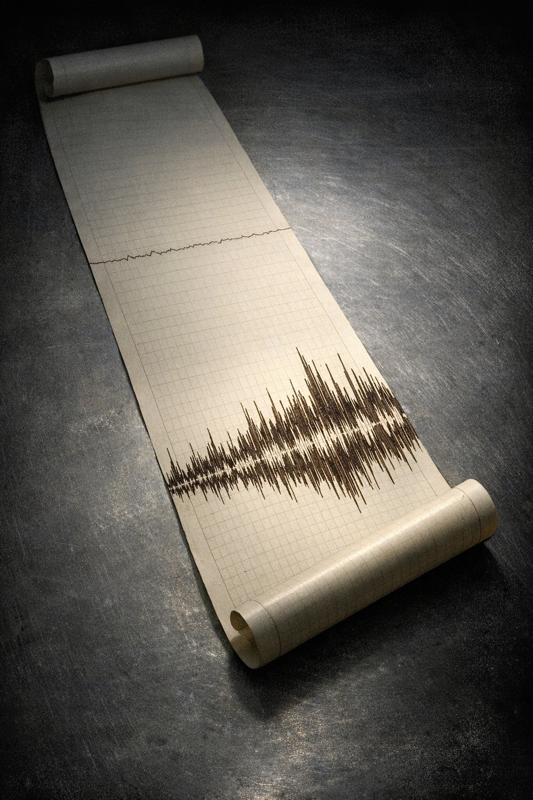

The Cold Signal
The Cold Signal
The Third Night
The receiver hut at nine in the evening smelled of warm electronics and the specific staleness of a sealed space: insulation adhesive, the petroleum note of the heating element, something like solder flux from work done months ago and never quite dissipated. Elena had stopped noticing the smell the way she stopped noticing the MicroVAX’s drive hum or the small continuous sound of the chart recorder’s feed motor. All of it was background — the baseline against which anomaly would be audible. This was what she came for.
She was writing in her field log. The entry was routine: the afternoon calibration pass, its results, the instrument temperatures at close of the 1800 radio window. The station had been hers alone for three days. The schedule was settled already — 0800 and 1800 for the Codan, meals at approximate hours, the rest for the observation windows and data review. The routine moved her without her having to think about it, which was its purpose.
The panel to her right vibrated at low frequency when the east wind ran along the wall. There was no wind tonight. The station was quiet in its own specific way, which was not what quietness meant anywhere else. The MicroVAX pulsed softly — a different quality of sound when the drive heads were reading than when they were not, though the difference was small enough that it had taken her a season to separate them. The chart recorder on the low bench to her left tracked its stylus across the thermal paper in its patient way, feed motor audible only if you were listening for it, which she was not. The generator shed’s twin Caterpillar diesels ran continuously; she felt them in the floor and the base of the desk more than she heard them. That was Halvorsen’s heartbeat. She registered it only when it changed.
Outside the window was polar night. It had been polar night for seven weeks and would be polar night for eleven more. The third night of polar winter as measured from the first true dark, which was how she had always counted. She noted it the way she noted the elevation: a physical fact that changed what was possible.
She was aware of the chart recorder the way she was aware of her own breathing.
At 21:14:07, by the log timestamp, the stylus moved.
It was visible at the edge of her attention before she had made a decision to look. She looked. The deviation was above baseline by a significant margin — not the low-level bleed-through from the local oscillator, which she knew by profile, which was flat in a characteristic way. This was not flat. It had internal structure, organized in the way that signals with sources were organized rather than the way noise was organized. She had been reading charts long enough that the distinction registered below the level of articulation.
She watched. She did not reach for the chart. She did not reach for the keyboard. The recording was capturing everything and she could replay it, but the chart was happening in front of her in real time and she was going to be present for it in real time. Thirty years had made this a reflex: not to react, to attend. The stylus ran above baseline for ten seconds, for twenty, for what she was counting, the trace describing a pattern she could see without yet interpreting — organized in a way that had no immediately available comparison, which was itself information, which she was also receiving. Then at forty-seven seconds by her count, it returned to baseline. She watched it hold baseline for another thirty seconds before she looked away.
She noted the end time. 21:14:54.
She put the pen down.
She checked the front-end electronics in sequence, in the order she had used for thirty years and had taught to graduate students at three institutions: connector seats first, LNA housing, IF chain output stages, attenuator settings, preamplifier heat sink. The heat sink ran warm in a characteristic way that could under certain conditions introduce spectral artifacts; tonight it was within normal range. She pressed each connector seat that could be pressed and found none loose. She went to the back of the main panel and checked the feed cable runs. She found nothing changed from the last manual check, logged two days prior. She came back to the terminal and sat down.
She played the buffer segment back. The trace on the monitor matched what she had watched on the chart. Forty-seven seconds above the thermal noise floor, the same internal organization visible on the display as on the paper trace, the same return to baseline at the end. She played it again. It was the same the second time. Recorded data did not change; she was not surprised. This was the assurance she was checking for: the instrument had seen what the recording held.
She wrote: 21:14:07 local. Duration 47s. Source bearing noted. Characteristics: above thermal noise floor, structured, not consistent with local oscillation or prior catalog entries from this sky position [uncatalogued]. All instrumentation nominal at time of detection and at subsequent manual check. Anomalous. See digital record and chart trace.
She read the entry back. It was accurate as far as it went.
She wrote the 9-track backup while the tape reels turned on their spindles. Standard station stock, 2400-foot reel. She had labeled tapes by the hundreds across five Antarctic seasons and had a particular method for it: the pen pressed hard enough that the label would hold through the temperature range of cold storage, parameters in a fixed order, nothing abbreviated that could be misread later by someone else, or by herself in six months. This one she labeled: HS-910603-A. 21:14:07L. 47s. Below that, the frequency band and receiver chain identifier. She considered the label, added the date in full. She set the tape in the fireproof box — gray steel, latching mechanism, interior lined with gray foam — and latched it.
The chart recorder’s relevant section she tore from the roll with care, working from the leading edge so the thermal surface wasn’t dragged. She folded it once lengthwise, slid it into an acetate sleeve from the supply drawer, labeled the sleeve in the same hand. The acetate went into the file box under the desk, which held two years of routine chart traces in rough chronological order. She noted in the log that this one would need a better location and left that as a note to address tomorrow.
Three copies extant. Digital record, MicroVAX HD. 9-track tape, fireproof box, labeled. Paper chart trace, acetate sleeve, file box. She initialed it: E.H. She read it back.
Three copies. She knew where all three of them were.
She also knew, without having written it, what the protocol said to do next. The protocol she had spent thirty years building, the one that carried her name on the second page of papers she had never authored, the one that six observatories used for exactly this purpose — for the moment of detection, for establishing grounds for exclusion, for discrimination between signal and artifact. The protocol covered this moment. What the protocol did not cover was the moment after verification was complete. She had never needed it to cover that. No one had.
She picked up her pen and turned to a fresh page.
She began working through the source candidates from memory. It was a long list and she knew it well. Satellite overpass: she checked the schedule log for the week; no overpass was due at this bearing in this window; she noted the grounds. Aircraft transponder: the McMurdo transit corridor ran eight hundred kilometers north of the station and the bearing was wrong; nothing in the aircraft log for this period; noted. Local oscillator anomaly: she checked the instrument log for any scheduled or unscheduled test signal; there was none; noted. Solar or geomagnetic event: she retrieved the space weather advisory from the fax tray and checked the indices; activity was unremarkable; noted. Ionospheric scatter from surface transmitters: she worked through the Antarctic treaty station network from memory — Vostok, Mirny, Casey, Davis, Mawson, Dumont d’Urville — constraining on bearing first, then duration, then the signal’s structural profile. The bearing constraints eliminated most of the network. The structural constraints eliminated the rest.
She wrote each candidate in the log with its specific grounds for elimination. The grounds were instrumental, not inferential. She was excluding, not concluding. The methodology required exhaustion of the exclusion phase before it permitted anything further, and she had not exhausted it. She had eliminated what she could eliminate tonight, in this hut, with these resources. Tomorrow she would continue. There were reference catalogs in the main hut she hadn’t yet consulted, frequency tables she would want, a longer list to work through. Tomorrow was appropriate. The data was stable. The recording was not going anywhere.
She wrote: Verification: first pass complete. No instrumental source identified on grounds available tonight. Full elimination protocol to continue, Day 2. She initialed it.
At 01:34 she looked at the nine pages she had written since 21:14. She looked at the terminal. She looked at the fireproof box.
Then she put on her outer layer and went outside.
The cold at minus thirty-four took everything it could immediately. She moved along the orange guide rope with her headlamp on, breath visible in front of her, each footfall on the compacted snow producing its particular loud compression. She looked up once. The sky was completely clear. The Milky Way was overhead in its full extent — the galactic core above the southern horizon, the plane spreading from horizon to horizon without any ground light to thin it, the stars in their ordinary numbers doing what they did. She had stopped being moved by the Antarctic sky sometime in her second season. She registered it and kept walking.
The main hut’s cold lock held the outside temperature. She came through into the hut’s warmth and stood a moment. The galley fluorescent strip buzzed slightly — something in the ballast at this elevation; replacing the tube had never fixed it. She filled the kettle at the sink and set it on the ring.
While the water heated she stood at the counter and looked through the partition into the radio room. The Codan’s frequency display was dark. The handset was in its bracket. The 1800 window had closed six hours ago. The 0800 window was six hours away.
The kettle boiled. She made the coffee with the powdered milk she disliked and had used in the field for fifteen years because it was available and the alternative was nothing. The blue mug with the hairline crack at the base — she had been using it for three seasons. She held it with both hands and drank in the careful way you drank something too hot, attending to the temperature more than the taste.
She did not go into the radio room. She did not form a decision about this; she stood in the galley and held the mug and when the coffee was finished she rinsed the mug and set it on the rack and went back out into the cold.
She played the recording twice more before 0400. Each time from the beginning, each time to the end without interruption. She had the headphones on for the second and third plays — the signal was outside human hearing range and the headphones gave her nothing except amplified hiss, but they were something to do with her attention, and she wanted her attention held still.
She wrote. She wrote about the frequency parameters and the bandwidth and the duration, and about the signal’s internal organization as she could describe it on the terms she had for describing such things. The vocabulary of signal characteristics and source discrimination — careful, technical, excluding inference. She was describing what the measurements showed. Not yet what the measurements meant. She knew the difference and she was not going to cross from one to the other until she had the grounds to cross.
At one point she stopped writing and looked at what she had written. Eleven pages since 21:14. She was precise and thorough and she had not written the sentence that all eleven pages were pointing toward, because she did not yet have the methodological standing to write it. She would have that standing tomorrow, after the second pass, after the reference catalogs, after the full protocol. Tomorrow she would write the entry she had the grounds to write.
She was entitled to tomorrow. She had made three copies.
She put the pen down and looked at the room around her — the familiar green and amber of the instrument displays, the chart recorder’s patient stylus tracking the baseline, the fireproof box below the rack with its latched gray steel door. She had spent hundreds of hours in this room. It looked exactly as it always had.
She wrote: 0400. Recording reviewed three times. Instrumentation confirmed nominal. No new candidates for elimination identified. Day 2 verification to proceed per protocol. She initialed it and closed the log.
At five o’clock she logged the end of the overnight window and shut down the non-essential equipment in the sequence the operations manual specified: secondary display, attenuator control panel, ancillary tape deck. She left the MicroVAX active and noted the reason: primary data record — to remain active pending ongoing verification.
She stood and pressed her palms flat on the bench and stretched her lower back, which had been in the same chair for eight hours.
She turned off the desk lamp. The room was in instrument light now: the green of the terminal screen, the amber standby on the tape deck, the red indicator on the chart recorder. Through the small window: darkness, the same darkness that had been there at nine o’clock and would be there at noon and would continue to be there for weeks.
She looked at the fireproof box.
She put on her coat and went out along the orange guide rope in the dark. The cold again. Her breath again. The stars still in their positions. She walked the sixty meters back to the main hut without hurrying.
In the bunk she lay down without fully undressing — the hut was cooler by five in the morning than at midnight, and she didn’t want to be cold, and she didn’t intend to sleep for long. She set the field log on the desk beside the bunk, within reach, where she could see its spine in the low light from the galley strip she hadn’t turned off. The generator hum came through the walls, unchanged. The copper pipes were silent at this hour. A wind had come up in the last hour and moved along the Jamesway’s insulated skin with a low sound she had learned over seasons to parse: this speed, this direction, nothing to act on.
She lay on her back and looked at the ceiling.
Tomorrow there was the second pass, the reference catalogs, the full elimination protocol. She knew what the second pass would find. She was not going to let herself articulate what she knew until she had done the work and written down what the work showed. The methodology required this and she was going to follow the methodology, not because she doubted herself, but because it was what the methodology was for. She had spent thirty years building it specifically to eliminate the gap between what she wanted to be true and what the data showed. She was not going to narrow that gap by not applying it.
She thought about forty-seven seconds. She thought about the trace on paper in the acetate sleeve in the file box sixty meters away, latched and secure. She thought about the structure the stylus had described in real time, which she had not yet fully named.
She had been looking for this for thirty years. She had looked for it carefully and thoroughly and with a discipline that was, she knew, genuine — and at some point in the course of all that careful looking she had stopped believing she would find it. She hadn’t decided to stop. She had kept looking, because looking was the work and the work was hers, and the belief had simply gone somewhere without announcement.
The wind moved against the wall. The generator ran.
She closed her eyes.
Verification, First Pass
She woke at 0716 by the watch on the desk beside the bunk. Four hours and a few minutes. The main hut was darker than dark — the fluorescent strip in the galley was still on from last night and the light it cast through the partition was flat and colorless. The generator hum came up through the floor. The copper piping was cold and silent.
She lay still for perhaps thirty seconds, taking stock in the way she had learned to do at altitude: head, lungs, the particular tiredness in the limbs. She was tired in the ordinary way of someone who had slept four hours. The instrument readings from last night were present in full at the back of her mind, undimmed. She had half-expected sleep to soften their precision. It had not.
She got up and put on her working layers in the order she had kept since her first Antarctic season. She filled the kettle and set it on the ring. While it heated she looked through the partition at the radio room. The Codan’s frequency display was dark. The handset was in its bracket. 0716. The 0800 window was forty-four minutes away.
She looked at the handset for a moment. Then she turned back to the kettle.
The coffee she drank at the galley counter, both hands around the mug. She ate one biscuit from the tin on the shelf — because it was there and she knew she needed to — and returned the tin to its place. Outside the window was the same polar darkness that had been outside the window at midnight, which was the same that would be outside at noon. In the beam of the station perimeter light she could see the orange guide rope, the compacted snow of the path to the receiver hut, and nothing else.
She was at the receiver hut by 0730. The lamp on. The field log open to the protocol page.
The Hartmann Protocol, as she had written it and revised and formally published it in its several incarnations, organized candidate elimination into twelve numbered categories, ordered by probability of occurrence rather than ease of exclusion. This was the discipline: the most common mundane explanations first, checked with the same rigor as the less obvious ones, because the common explanation was usually the answer and the record needed to show she had checked. Last night’s work had been preliminary — from memory, without the reference materials, before she had slept. Today she would work from the protocol as written, in order.
Category one: local radio-frequency interference, subcases including antenna coupling, near-field emission from station equipment, and conducted interference from power supply ground loops. She retrieved the station electrical schematic from the laminated folder on the top shelf — she had laminated it in Christchurch because she had needed it in the field before and did not want to manage an unlaminated paper at minus thirty — and worked through the coupling calculations for the receiver circuit against the station’s listed electrical loads. Each calculation was written out in the log, result and grounds. She compared the expected interference profile from a ground-loop event against the signal’s frequency and bandwidth. Category 1 excluded. Calculated coupling below detection threshold by two orders of magnitude. Ground loop profile inconsistent with signal bandwidth. She initialed it.
Category two: satellite overpass artifact. She had the transit schedule from the weekly fax; she had checked this last night from memory, but she pulled the fax from the tray now and worked through the timing formally — each satellite in the transit window noted, the bearing deviation from each noted, the profile mismatch stated on its specific grounds. Category 2 excluded. Initialed.
She was partway through category three — aircraft transponder or tracking signal — when 0800 arrived. She put down the pen, closed the log, and walked the orange rope to the main hut, her breath a lit column in front of her headlamp.
She sat at the radio desk and picked up the Codan’s handset and ran the call sign exchange in the proper order. The frequency was clear; Varga’s response came back in two seconds, his voice warm and slightly attenuated by the ionosphere’s morning condition.
“South Pole reads you, Halvorsen. Good morning.”
She gave him the weather — wind, ambient temperature, cloud cover, in the abbreviated notation they both used — and he gave her South Pole’s: calm, minus fifty-one, clear. He asked about her instrumentation suite, which he did most mornings as a way of asking if she was all right without asking directly.
“Instruments nominal,” she said. “Weather passable. No unusual events overnight.”
She registered the sentence as she said it. True, technically. No unusual events she had not been present for. She had not stated a false thing. She had not stated a full thing.
Varga said the spectrum analyzer on his end had thrown a timing error after the 1800 window and he’d spent an hour chasing it to a firmware flag — resolved, nothing to act on, but he’d noted it in his log and would mention it to McMurdo at the next traffic window. He narrated small equipment problems without drama; she had always found this restful. She asked after his health. He paused one beat before answering — not hesitation, just his way of actually considering the question — and said he was tired because he’d stayed up past midnight reading a paper he’d been putting off for weeks.
“Was it worth it?” she said.
“Parts of it. I’ll send you the citation if you want the frustration.”
She allowed a short sound. “Pass.”
The call closed in under four minutes. She replaced the handset and sat a moment. The Codan’s display returned to standby. She went back to the receiver hut.
Category three: she completed the McMurdo flight digest check, verified no unscheduled air traffic in the region for the prior week, noted the bearing deviation of the transit corridor from the signal’s source bearing — forty-one degrees, excluding any reflection geometry she could construct from any surface feature in the region. Category 3 excluded. Initialed.
Category four: equipment oscillation or resonance artifact. She had the instrument readings from last night’s manual check and cross-referenced them against the expected oscillation signature from resonance events in the IF chain. The comparison was not close. Category 4 excluded. Initialed.
She went to the main hut once, mid-morning, to refill her thermos. She did not linger. She came back.
Category five: ionospheric reflection of terrestrial broadcast. Thirty-five minutes with the path loss tables from the third reference volume on the shelf and the geometry of every possible surface transmitter within reflection range. She worked through the Antarctic station network station by station, constraining first on bearing and then on the signal’s structural profile. The geometry could not be made to fit; the structural comparison was worse. Category 5 excluded. Initialed.
Category six: solar and stellar natural emission — a class with several subcases, each requiring the source catalog she had brought from Christchurch packed alongside her bifocals and her field notebooks. She worked through the relevant frequency ranges and the sky positions of catalogued sources. The signal’s sky position did not match any catalogued source within the tolerances she was working to. This was the category she had always thought would be the one to explain it, if there were ever an it to explain. A known natural emitter, undercharacterized, or a new one at unexpected parameters — it was where she had expected to find her answer, if the answer existed. It was not here. Category 6 excluded. Initialed.
She paused after six. Her hand rested on the pen and she looked at what the log held: six formal exclusions, systematic, documented, grounds recorded for each. The protocol was designed to be legible to someone who had not been present. She had always considered this one of its strengths — that the reasoning was recoverable by any competent reader, that nothing required trusting her account of what she had seen.
The problem was that each exclusion accumulated in a single direction, and the direction was not the one she had wanted to arrive at. She had wanted to find an error. She had been running the protocol since 0730 hoping, in the particular way hope works before it runs out, that one of the categories would open rather than close. They kept closing.
She turned the page and continued.
Category seven: pulsar or magnetar emission. Frequency parameters and temporal structure of the signal against the pulsar catalog. The result was unambiguous. Category 7 excluded. Initialed. Category eight: magnetospheric event of planetary origin. Space weather indices for the relevant period — quiet conditions throughout — and the comparison against the signal’s onset time, duration, and spectral signature. The comparison was not close. Category 8 excluded. Initialed.
At some point in the early afternoon she noticed she was not registering what was in front of her. She had read the same figure from the space weather table twice without it arriving. She went to the main hut. She made soup from the packet on the shelf, sat at the galley table, and ate most of it.
She had brought from McMurdo a paper she’d been meaning to read — magnetospheric atmospheric coupling at high latitudes, from a group at Uppsala. She opened it at the galley table and read the abstract and three pages of the introduction and understood that her eyes had moved across the text without carrying any of it. The words had been present; she had not been. She set the paper down.
She sat with the empty bowl. The generator ran. The fluorescent strip buzzed in its mild intermittent way at this altitude. She was not in the galley; she was in the receiver hut running the comparison tables, even while she was sitting still in the galley. This was not new — she had always worked best in the interstitial hours, the space between looking directly at the problem. What was new was that the tables kept returning the same result no matter where she ran them.
She rinsed the bowl. She went back.
In the middle of the afternoon, between categories, she set down the protocol and reached for the headset on the hook above the tape deck. She put it on and seated the cups over her ears. The headset gave her nothing she could hear — the signal was well outside audible range, and what it carried through the amp was hiss, equipment noise, the ordinary voice of warm electronics. She kept the headset on anyway. It was a way of making a perimeter around the thing she was about to do.
She played the recording from the timestamped start. Not the filtered analysis output but the raw file. She sat still. She closed her eyes and let the seconds accumulate — not measuring them against the protocol, not comparing the trace against any reference, just present, the way she had not let herself be present the night before when there was still preliminary work to finish. She had earned this by now: eight categories in the log, each one closed. Forty-seven seconds. When she reached forty-seven she opened her eyes and watched the terminal show the return to baseline.
She removed the headset and set it on the desk. She sat without moving for what she estimated later was a minute, perhaps slightly longer. The chart recorder’s stylus traced its patient line. The room was at its usual temperature. Then she picked up the pen and wrote the afternoon’s entries into the field log, each exclusion on its grounds, the notation clean and legible.
The 1800 call was brief. She reported system status — instruments nominal, overnight recording run in progress — and he gave her South Pole’s weather. The aurora had been visible at his latitude the previous night, he said. Spreading up from the south in the particular way it moved when the conditions were right.
“Did you see it at your latitude?” he said.
“I was inside most of the night.”
A short pause. “Hartmann. You should look up sometimes.”
It was said lightly, the way he said things that were also true. She allowed a sound that was not quite a laugh. “Tomorrow,” she said.
“I’ll hold you to it. South Pole out.”
“Halvorsen out.”
She replaced the handset. The frequency cleared. She stood a moment in the radio room — not going anywhere, not looking at anything in particular, just standing. The Codan’s display returned to standby. Then she turned off the lamp and went back out into the cold.
In the receiver hut she checked the overnight recording parameters against the checklist she had written at the start of the season: sensitivity, frequency window, integration time. Everything was running. She would have the comparison data she needed for category twelve by 0700.
Category twelve was the last remaining candidate — the one that required a second observation window, a second night of instrument run, before she could close it properly. She had set up the overnight recording at the end of the previous watch and it had been accumulating all day while she worked through the others. By morning she would have what the protocol required.
She knew what the overnight run would show. This was the fact she had not written in the field log. The methodology required the data before the conclusion, and she would have the data by morning, and so she was going to wait. She was going to follow the methodology. She had spent the better part of thirty years insisting on this sequence — the evidence before the claim, the test before the result, nothing stated until it could be stated on grounds — and she was not going to stop now because she was on this side of it rather than the other.
She wrote in the station log — the bound official volume, legible to any reader — Instrument run nominal. Verification protocol in progress, Day 2. Eleven of twelve categories completed. Category 12 pending overnight comparison data. No anomalous conditions detected during Day 2 observation window. She initialed it and closed the volume.
She looked at what she had written for a moment.
She put on her coat, turned off the desk lamp, and left.
Outside it was minus thirty-seven and still. No wind. Her headlamp lit the column of her breath. She walked the sixty meters back along the orange guide rope. Above her, she knew, the stars were in their positions, the galactic plane fully visible at this latitude, no ground light to thin it. She had stopped being moved by the Antarctic sky in her second season. She noted it without looking up and kept walking.
Inside she made tea and drank it at the galley counter, both hands on the mug. She did not read. She washed the mug and set it on the rack. She went to the bunk.
She lay on her back in the dark, wool layers on, looking at the ceiling she could not see. The generator hum came through the floor steadily. The copper piping along the wall was cold and quiet. A wind came up sometime after midnight and ran along the Jamesway’s insulated skin with the low moan she had learned over seasons to parse — this speed, this direction, nothing to act on. She let it register and recede.
What she held instead was the structure. Not the conclusion the structure pointed toward, but the structure itself, as a set of measurements: the frequency parameters, the bandwidth, the forty-seven seconds of organization she had been watching on the terminal all day. Eleven candidates, each tested against it, each unable to account for it. Each comparison logged. She had followed the protocol exactly and it had done what it was designed to do, which was to eliminate every alternative and leave her with whatever the alternatives could not explain.
She had built it for this. She had built it knowing that the moment, if it came, would require exactly this — the discipline to hold the result at arm’s length until the grounds were complete. She had lectured on this, written on this, trained people on this for fifteen years. She had imagined, in the vague way she imagined things she had stopped expecting, that she would be ready.
She lay on her back and let the measurements pass through her mind in their order, one at a time. Outside, the wind stilled. The station settled around its heartbeat of fuel and running machinery. She remained as she was for a long time before sleep came.
Elimination Complete
She was in the receiver hut at five minutes before six, earlier than the overnight data strictly required. She had lain awake for a portion of the night — she was not sure how long — and had come to the conclusion, somewhere in the dark before her watch said it was worth getting up, that there was no further benefit to remaining horizontal. She had dressed in the galley light and walked the orange rope and here she was.
The station outside had been still. No wind. The cold was the dry, uncomplicated kind, the temperature a plain fact rather than a condition; her breath had made a column in the headlamp beam and the column had stood for a moment before dissipating in the still air. The walk had taken under two minutes. She had not looked up.
The MicroVAX terminal was active, the display casting its low green light across the desk. The chart recorder’s stylus traced its patient slow line across fresh paper. Everything as she had left it the night before.
She sat and opened the instrument log to the current page and reviewed the overnight setup entries. Then she checked calibration. She checked calibration before she read the data because she had trained herself to do it in that sequence two decades earlier, after a candidate signal at Parkes had turned out to be a gain drift she had not caught in time because she had been eager — which was the wrong thing to be — and had gone to the result before checking the grounds. The training had held since. Calibration was clean: the reference signal on channel two was nominal, the frequency standard was holding, the noise floor was within specification. She wrote Cal. OK 06:01 in the log margin and initialed it.
She read the data.
Category twelve was the end of the list. She had built the protocol with twelve categories because twelve covered the full range of what a candidate could plausibly be, ordered by the probability of occurrence rather than ease of exclusion, and with the last category reserved for phenomena that were themselves an admission — things not yet fully characterized in the literature, known in a handful of documented cases to produce brief intervals of narrow-band emission with enough internal organization to resemble, at first reading, something other than what they were. Three cases in the published record as of her most recent review. Each had been caught by a specific feature of its spectrum: a characteristic steep rolloff at the upper end of the detection band, a signature of the emission mechanism, present in all three cases because physics required it of objects of this class.
The exclusion criterion was this feature. If the signal belonged to category twelve, the feature would be present.
She had set up the overnight comparison run at the end of Day 2: spectral data accumulating across the observing window, to be compared against the reference profiles from the published cases. She called up the comparison output on the terminal and worked through it methodically — the spectral slope extracted at three points across the upper band, the rolloff rate measured against the criterion and the threshold she had set at the start of the season.
The feature was absent. Not at the edge of the uncertainty bounds — absent, cleanly, in the sense that what was present was positively inconsistent with what the feature required.
She went through it again, varying the extraction parameters within the plausible range, asking whether any instrumental effect could account for the absence. None could. She noted the grounds in the log as she worked: the measured slope at each frequency point, the deviation from the criterion profile, the comparison against instrumental noise at the relevant scale. Each note occupied a line. Each line pointed in the same direction.
She set down the comparison printout and opened the field log to the next blank page.
She wrote: Cat. 12 eliminated. Spectral profile inconsistent with known natural transient class at all tested parameters. No known natural or terrestrial source accounts for received signal. Verification complete.
She wrote the date: 5 June 1991. She wrote the time: 06:04. She wrote her initials: E.H.
She set the pen down and looked at the page.
Twelve entries. Twelve eliminations. Each one logged in the same format, initialed in the same hand, the grounds recorded so that any competent reader could follow the reasoning without requiring her account of what she had seen. She had always considered this the protocol’s primary virtue: that it did not require trust, only reading.
The protocol had done what it was designed to do. It had cornered her.
The instrument log binder was on the shelf beside the reference volumes. She had moved the chart trace there from the general file box on the afternoon of Day 2 — the acetate sleeve not the right housing for a document she might need to locate quickly in a year or a decade, by someone who was not her — and had tabbed the section and noted the page numbers in the index. She opened the binder now to pages forty-four through forty-six and took the trace from its sleeve.
She laid it on the desk in the lamp’s small circle.
The trace was forty-seven seconds long. It rose from the baseline at the left margin, ran through its interval, and returned. She looked at it first without her bifocals — the full length of it — the way she had looked at it on the night it was made. Not analyzing, not comparing against a reference; simply looking at it from the outside, the way you looked at a thing you had already learned and needed to hold in your hands once more.
She found her bifocals on their cord around her neck and looked at the trace with them, going from left to right slowly, section by section. She moved the magnifying lens on its arm over the area she had always gone back to on previous readings. She looked at this for a while. Then she removed the bifocals and looked at the full length of it again with her naked eye: left margin to right, the full forty-seven seconds.
She replaced the trace in its sleeve and returned the binder to its place on the shelf.
The 0800 call required her to be in the main hut. She put on her outer layers and walked the orange rope. The air was still and cold and her headlamp swept the compacted snow of the path ahead. To her left the radome was a pale mass against the absolute dark, the fiberglass dome skin smooth. She did not look up.
She sat at the radio desk at 0758. At 0800 exactly Varga’s voice came on frequency, slightly attenuated by the morning ionosphere, warm.
“South Pole reads you, Halvorsen. Good morning.”
She gave him the weather — calm, clear, minus thirty-six, no change from the previous evening — and he gave her South Pole’s: minus fifty, a slight drift from the southeast, clear. He asked how the overnight run had gone.
“Overnight run was clean,” she said.
The sentence was true. The run had proceeded without error; the calibration had held, the comparison data had been logged correctly, no instrument fault, no unusual event. The run had been exactly clean. She heard herself say it and heard it travel the frequency and knew that it was the most precise true thing she had available and also the least complete. She kept her voice at its usual register.
He said the timing module on his back-end processor had shown a recurring drift he had been watching since the previous week — nothing requiring action, he was going to note it in his log, would she flag hers if she saw anything analogous. She said she had not seen anything analogous, instruments were running normally. He said to flag it if she did. She said she would.
He asked how she was sleeping.
“Well enough,” she said.
“That’s generally the right amount for this kind of work,” he said.
The call closed in under five minutes. She replaced the handset and sat a moment with her hands flat on the desk. The Codan’s display returned to standby. Through the partition she could see the galley, the tin of biscuits on the shelf, the kettle. She looked at the radio room wall. Then she stood and put her coat back on and walked the orange rope to the receiver hut.
She sat at the desk without having reached for the next task in the ordinary way she moved from one task to the next. The MicroVAX cursor blinked at its prompt. The lamp was on. The chart recorder ran. Outside the station ran in its ordinary way — the generator, the cold, the polar dark that was the same at nine in the morning as it had been at midnight — and none of this required anything of her at this precise moment.
Three options. She had not arranged them; they arranged themselves the way things arrange themselves when she had stopped preventing it.
Transmit. She went through what it required: not the mechanics of it — she knew the frequency, the address, the emergency traffic procedure she had not used in five years but had not forgotten — but what it cost. The data would enter the institutional chain and the chain’s logic would become operative. The reviewing bodies, the coordinating committees, the protocols written for exactly this contingency and waiting for it, some of them, with varying degrees of conviction, for longer than she had been in the field. She had no reason to doubt the process; she doubted only the position it would assign her. She would have been the instrument of detection. What followed would follow at the apparatus’s pace and in the apparatus’s manner, and her place in it would be whatever place the apparatus found appropriate for a woman who was sixty-four, in her second-to-last season, with retirement papers on her kitchen table. She noted this consideration and tried to be honest about how much weight it deserved.
Preserve. Keep the copies as they were. Complete her own analysis and documentation. Bring it to Christchurch in due course, bring it to Pasadena, submit it through the formal publication process at the appropriate time, with her methods and her conclusions intact and her name in the correct position in the record. The outcome would also be correct and the work would be recognizably hers. She thought about the timeline: the paper, the review, the submission cycle. Her retirement papers. She would be ahead of the finding rather than in it, moving away from the field at the same pace the process moved. She would have done it correctly and she would not be there for what it did next. She noted that this was not the same problem as the first option, and she noted that she had not yet demonstrated it was better.
Destroy. She held this the way she would hold a hypothesis: what does it require, what does it produce. She looked at the binder on the shelf. The fireproof box latched closed. The MicroVAX with its blinking cursor. She sat with it for a full minute, which she knew because she watched the terminal clock advance. She did not rush herself. She gave it the time that fairness required.
She did not reach a conclusion on any of the three. What she registered, without naming it, was that she had finished the 0800 call thirty-five minutes ago and had not picked up the handset since. She had not moved toward the radio room. She had not opened the fireproof box with any purpose other than checking the latch. She had been sitting at the desk.
This was itself a datum. She did not write it in the log.
She closed the field log, got up, and went to the main hut to make something to eat.
She put the kettle on and made coffee. Through the partition she could see the radio room. The Codan sat in its bracket. The handset was in its place. The 1800 window was nine and a half hours away.
She rinsed the mug and went back.
In the receiver hut she went through the three copies in the order she kept them.
The MicroVAX disk: she queried the file at the terminal prompt, confirmed the timestamp and file size against the Day 1 log entry, called up the backup flag and confirmed it set.
The nine-track tape: she opened the fireproof box — rated to 927 degrees Celsius by its manufacturer, a line item in the Parkes season equipment budget that she had not regretted — and checked the cassette. It was seated correctly in its case. The label read HS-910603-A in her handwriting. She had written it on the night of the third of June and the ink was dry and legible. She latched the box.
The chart printout: she opened the binder to pages forty-four through forty-six. The acetate sleeve was in place. The trace inside it.
Three copies. All present and in order.
She wrote in the field log: Three copies confirmed present. MicroVAX disk. 9-track tape (FB-1, receiver hut). Chart printout (log binder, p. 44–46). E.H.
She closed the log. The lamp was on. The chart recorder ran. The field log held the verification entry and the copies confirmation and twelve initialed exclusions and a date and a time and nothing else.
At 1800 Varga’s voice came on frequency with the weather and the system status exchange. She said all nominal, the overnight run was continuing, instruments running. He gave her South Pole: minus fifty-two, clearing after a brief afternoon overcast.
“We had a small excitement this afternoon,” he said. His voice had the dry quality it got when something had resolved and was now available as a story rather than a situation.
“Oh?”
“The spectrum analyzer array threw a candidate reading. Seventeen seconds of organized broad-band excursion. Consistent, on first examination, with structured emission.” A pause. “The graduate student monitoring the array was quite engaged.”
She waited.
“Loose cable at the back-end connection. The cable had been vibrating against the chassis from the ventilation fan cycle — every time the fan ran it introduced a small discontinuity in the ground path. The student had begun taking notes.”
She thought of the student and the seventeen seconds and the notes, and she allowed a short sound that was nearly a laugh. “How long to find it?”
“Forty minutes. The cable was directly behind the rack. Clearly visible once we looked.” A brief pause. “Good practice. It’s useful to know where the cables are.”
“It’s always a loose cable,” she said.
“In my experience, yes.” He let a beat go. “We checked everything three times after. The student will check everything three times for the rest of the season.”
“As they should,” she said.
The call closed at 1812. She wrote the time in the log and set the handset in its bracket. She sat at the radio desk for a moment — the display returning to standby, the overhead heating element ticking once in its cycle — and then she reached up and turned off the lamp.
She sat in the radio room in the dark. Not the polar dark outside, which was a darkness with depth and stars and a horizon; the interior dark, even and total, pressing without distinction on all surfaces. She could hear the generator. She could hear her own breathing, which was steady. She sat that way for a minute, perhaps a little longer. Then she put on her coat and walked through the galley and went to her bunk.
She lay on her back. The generator ran below everything, the station’s heartbeat, continuous. The Jamesway’s insulation settled against the cold in its low intermittent way. No wind. Above the roof the stars were where they were, the galactic plane completing its arc across the Antarctic sky without requiring anything of her.
Eleven days remained before the LC-130.
The field log was closed in the receiver hut with the verification entry on the page, the copies confirmed and logged, the protocol complete in the full sense she had always meant it to be complete — the kind of completeness that did not require her word for it, only her documentation.
She had not transmitted. She had not destroyed anything. She had checked that everything was in its place and she had sat for a while in the dark and she had gone to her bunk.
The three options were in the room with her the way the generator sound was in the room — not a thing she had chosen to invite, simply present, running.
None of them had won yet.
The Three Options
She set up the desk deliberately.
She moved the field log to the lamp’s direct light, adjusted the lamp angle so the beam fell squarely on the open page. She brought the coffee from the galley — the mug with the chip on its handle — and placed it to her right. She found the correct pen in the breast pocket of her fleece. She opened the field log to the first blank page, which was the page after the copies-confirmed entry from the day before.
She knew what she was going to write. She sat for a moment before she wrote it — not because she was uncertain about the format, but because she understood that writing it would make it different from merely thinking it, and she wanted to begin from that understanding rather than arrive at it afterward.
Then she wrote.
6 June 1991.
Three options.
1. Transmit — full data package, notification per NSF/USAP protocol. Copy to South Pole (Varga). Copy to McMurdo. Copy to institutional chain (USAP-Boulder, Ames). Signal parameters, verification summary, methodology citation, conclusion.
She had not been thinking about the number of copies, specifically, but once she had written them down — South Pole, McMurdo, Boulder, Ames — the distribution had an administrative completeness to it that was informative. The apparatus did not come in pieces. You notified once and all of it became operative simultaneously, each node with its own obligations and procedures, each procedure generating the next, the chain self-sustaining once started and not self-stopping.
2. Preserve — hold data, complete formal write-up, submit through standard peer-review channel under sole authorship before retirement.
The timeline on this option arranged itself without being invited. A paper written between field season and the winter term — a month, six weeks, if she worked at the pace she’d maintained in earlier years, which was a reasonable assumption. Review at a reputable journal: three months at the fast end, and she had grounds to expect it would not move at the fast end, that the editorial board of any journal she submitted to would regard what she was claiming with the skepticism that was correct practice here, as it would have been hers. Publication after that. And then the institutional conversations that followed publication rather than preceded it, which had their own logic and timeline.
She would be retired before any of it completed. She would be watching whatever it became from outside it, at the remove that retirement created, which was not the same as the remove of simply not having been the one to find it. It was a different kind of distance. She thought about what name would appear in the secondary literature, in the papers that built on the discovery, in the presentations at conferences she would attend as an emeritus rather than as a working scientist.
She noted the quality of this thinking and noted that it was not the same as principled judgment, and she wrote the next entry.
3. Destroy — erase MicroVAX disk, burn chart printout, degauss tape. No record. No one knows.
She had not hurried to option three. She had written it because she had written the others, in the order they had presented themselves, and to not write it would have been a different kind of decision — one she wasn’t prepared to make without examining its grounds.
She sat with it for a full minute. She did not look away from the page. She watched the terminal clock’s numerals advance at the corner of her vision and she held the option the same way she held a hypothesis at the start of a protocol run: what does it require, what does it produce, what does it assume about the world in which it is carried out.
She did not reach a conclusion.
She did not cross it out.
She thought about what option one required physically. The institutional chain was the machinery you set in motion; the motion itself was smaller and specific. Go to the receiver hut. Compose the notification at the terminal. Set up the data modem for the satellite transmission window. Walk back to the main hut. Key the Codan, raise McMurdo on voice, state that formal traffic was pending. Wait for acknowledgment. Return to receiver hut and initiate the data transfer.
She put on her outer layers and walked the orange rope.
In the receiver hut she stood in the doorway for a moment, her hand on the cold frame. She did not go to the MicroVAX. She looked at the chart recorder making its patient record of the day’s instrument feed — baseline, nothing, the same ordinary trace it had been making before the third night and had continued making since. She looked at the terminal. She looked at the tape deck housing and the fireproof box latched beside it. She looked at the terminal again.
Then she turned and walked back to the main hut.
She had not touched anything.
At 0800 Varga came on frequency with the weather.
“South Pole reads you, Halvorsen. Morning.”
She gave him her readings: minus thirty-three, calm, clear sky, no change from the previous evening. He gave her South Pole’s: minus fifty-four, overnight wind from the southwest diminished to calm by 0600.
“Ionospheric conditions have been degraded since approximately 0300,” he said. “I’m tracking some instability in the midday window — we may lose a few hours of usable bandwidth. Worth planning around.”
“Noted,” she said. “I’ll plan accordingly.”
“How’s the overnight data running?”
“Nominal.”
“Good.” She heard the characteristic slight fade on the South Pole link — frequency drift, not degradation, just the ionosphere at this hour. “Anything going out on your end?”
“No traffic pending,” she said.
“All right. Until 1800, Halvorsen.”
“Until 1800.”
She put down the handset. Two minutes, fifty seconds. She opened her notebook to the next page and wrote: 0800. I/C conditions degraded per Varga. Midday window uncertain. She paused and then wrote: Nominal. She looked at the word for a moment. It was accurate. She closed the notebook and sat with her hands in her lap.
She had written a transmission notification once before. It had gone in the other direction.
A colleague at Parkes, January 1986. Not this kind of candidate — the grounds for the candidate were different, the verification less complete, the candidate itself briefer and less organized in its structure — but something in the same category of premature certainty. She had been the one called in to examine the analysis, and she had found the error in the first hour, and she had written three pages of documentation explaining why the signal was not what the colleague believed it was, and she had sent it via data fax at two in the morning because the colleague had been on the verge of making calls that could not be unmade. The analysis had held. By the next morning the candidate had been retired with the appropriate entry in the station log, and the colleague, after a day of silence, had written to thank her.
She knew the notification format because she had been standing at the receiving end of it that night, reading the draft the colleague had written before she made her analysis call. She knew what the document looked like when it was right. The structure was as familiar to her as any methodology citation she had ever written: the date, the station identifier, the reporting authority, the classification header. Then the body.
She found a sheet of blank form paper in the station supplies and uncapped the pen.
Signal parameters: — frequency, bandwidth, time of reception, duration. She wrote these from memory; they were in the field log and on the chart trace and in the MicroVAX file, but she had no need to check them. She had written them eleven times in the past three days.
Verification summary: — twelve categories, each eliminated, dates of elimination, grounds cited for each in brief. The protocol name and the citation for its publication. She had published the methodology paper in 1978 and had written the citation in papers and institutional documents many times since; it required no thought.
Methodology citation: Journal, volume, pages.
Conclusion: — three sentences. The sentence that said what the data showed. The sentence that described what had been excluded and on what grounds. The sentence stating the reporting obligation under Section IV of the Antarctic Treaty’s scientific exchange protocol, which she had read on more occasions than she had originally expected to need it.
The document ran to three pages. She had not looked at the clock when she began; she looked now and it read 1117. Ninety minutes. She read the document from the beginning.
Every sentence was right. She knew this in the same way she knew when a protocol entry was complete: not from satisfaction, which was the wrong register for this, but from the absence of a further objection. There was nothing in the document to correct. It said what the data required it to say. It said it in language that any competent reader in the institutional chain would understand in the same way she had understood it in writing it.
She read it again.
Then she folded the three pages lengthwise, then crosswise, and she put them in the desk drawer and closed the drawer.
She did not tear them up.
She did not go to the radio room.
She sat for a moment looking at the surface of the desk.
Brandt would arrive with the team on the LC-130. Eleven days remaining now — she had shifted past midnight; it was Day 4. Brandt would do what she always did when she arrived at a station that had been occupied by a single researcher during the dark season: check the instrument records, pull the MicroVAX archive and compare it against the log entries, review the tape catalog for completeness and labeling. She would do this not because she suspected anything but because it was what a conscientious team leader did, what the USAP operational guidelines recommended, and what Brandt had done at the start of every season Elena had shared with her.
Brandt worked quietly and without ceremony. She did not narrate her findings while she gathered them; she gathered them and then she came to you with what she had found, and in Elena’s experience the accuracy of what she found was not improved by the presence of Elena in the room. She simply noted what was there.
Elena had worked with Brandt for six years. She had no illusions about what Brandt would find if she left the record as it currently stood: the verification entries in the field log, the copies confirmed and logged on Day 3, the chart printout in the instrument binder at pages forty-four through forty-six. The log had a structure and a pace and a consistency that Brandt knew from previous seasons. Any gap she created would read as a gap against that background. Any absence would not be invisible; it would be the shape of what had been removed.
This was not, Elena thought, a threat. It was simply what Brandt was. It was among the reasons Elena had come to trust working alongside her.
The feeling this produced, sitting at the desk with the drawer closed and the coffee long since cold, was not quite being watched. It was something closer to being accompanied at a distance by someone who could not hear what she was thinking but would, in eleven days, read what she had written.
She opened the field log to the options page and read the three entries.
She read option three again. She noted that the minute she had spent with it had produced no conclusion, had moved her in no direction — which was itself a form of data, she thought. When she applied the same holding to the other options, the same waiting without forcing, they also did not resolve. They remained what they had been when she wrote them down: three labeled possibilities, each with its shape and its cost and its downstream consequences, each also dependent on what she wanted in a way that was not distinguishable, at this moment, from the grounds for a principled decision.
She found the pen.
She wrote below the third entry, in the same handwriting she had used for the others:
4. Something else.
She left a blank line beneath it. She drew a single underline beneath the blank, marking it as an entry not yet filled rather than a line with nothing to say.
She looked at the blank line. It was a different quality of blankness from the blank pages she had been writing on all week — those were simply empty, waiting to be used; this one was a question she had formally addressed to herself with a line left open for the answer. She did not know what the answer was. She had made the space for it because the alternative was to close the options at three, and three did not feel closed.
She set the pen down. It rolled a short distance toward the desk edge and stopped.
At 1800 Varga came on frequency.
“South Pole reads you, Halvorsen. You should see it tonight, if you go out.” A pause. “Well. You won’t see it from in there.”
“I’ll go look,” she said.
“The oval’s sitting right over us. You’re too far north for the display we’re getting — you won’t see it from your position.”
“I know,” she said.
She heard him not saying several things and she heard herself not saying several more and neither of them said any of them. The warmth of it was in the pause.
“How’s the schedule holding?”
“No traffic pending,” she said. “The ionospheric fade was less than your estimate — midday window was usable.”
“Good. South Pole was similar. Conditions improved around 1100.” He gave her the evening data: minus fifty-six, calm, aurora active on the southern and eastern quadrants, overhead by 1600. He had been outside twice; the second time for longer.
“What does it look like,” she said.
“Green,” he said. “Wide bands. Moving.” He left a beat. “I’ll try to get out again before the 2200 window.”
She said good night. He said good night and signed off. She put the handset in its bracket.
She sat for a moment and then she put on her coat and her outer fleece and her hat and her gloves and she went out through the galley door.
The cold arrived all at once, settling through layers until it met the heat her body was producing and stood at that boundary. She walked three meters from the door and turned her face upward.
No aurora. He had said she wouldn’t see it and she hadn’t. The oval was sitting over the Pole; whatever was overhead here was not that. What was overhead here, in its place, was everything else. The Milky Way crossed the sky from southwest to northeast, the galactic plane distinct and legible, a smear of density at the center that her dark-adapted eyes could resolve at its edges into the individual accumulation of it — the arm of the galaxy visible as a structure, its components as components. She looked at it without analysis. She looked at it as a person standing on a cold surface.
The cold reached past her jacket’s boundary after the first minute and settled into the layer beneath. She became aware of her fingers inside the gloves. The loss of sensation at the fingertips beginning in the ordinary way, not urgency, just the temperature doing what it did.
She was outside for four minutes. Then she went back in.
She hung the coat and the outer fleece on their hooks. She stood in the galley in the warmth of the interior for a moment, looking toward the radio room and the closed desk drawer, and then she walked through to her bunk and sat on the edge of it.
She unlaced her boots and set them side by side on the floor. She looked at the ceiling of the Jamesway — the insulated arch, the slight condensation gathered at the seam. Outside, the Milky Way was where it was. The generator ran below everything. Eleven days.
She lay down and looked at the ceiling and did not look at any of the other things.
The 0800 Schedule
By Day 5 the station had a shape to it. Not a comfortable one exactly — Elena had been on enough solo stretches to know the difference between a station that had settled and a station that was merely functioning — but a shaped one. Instrument check from 0530, log update at 0700, walk the rope to the main hut for the 0800 call, return to the receiver hut for the monitoring session. Meals at intervals that depended on appetite and on whether the galley had anything she was willing to eat without heating. Radio again at 1800. The shape of the day was not demanding; it was simply the shape, and she moved inside it the way water moved in a channel: not thinking about the direction, only about the next few meters.
She was at the secondary desk in the receiver hut, the protocol maintenance log open beside the terminal. The terminal screen showed the overnight accumulation in its patient columns — baseline data, the regular celestial background, the narrow-band survey continuing its work as it was designed to do, finding nothing. She had been looking at the same kind of columns for three decades, with variations in the particular nothing they recorded. She did not find this depressing. The columns were honest work. The columns were what the instrument was for.
She was thinking about the signal.
Not directly. She had learned over four days that thinking about it directly produced a particular quality of arrested attention — a kind of cognitive stop, the thought running into itself and halting — and that the more useful mode was oblique: to let it sit at the edge of her awareness while her hands did something else. Her hands were annotating the calibration margins in the log, transferring numbers from the terminal screen in the handwriting she had been using in field logs for thirty years, and at the margin of her attention the signal sat there as it had been sitting for four days. Forty-seven seconds. The organized structure of it. The three copies in their three locations. The desk drawer in the main hut, sixty meters away, with the folded form paper inside it.
She transferred the last calibration figure, initialed the entry, and checked the clock. 0747. Thirteen minutes.
She put on her outer fleece, her hat, her gloves. Outside, the temperature was minus forty-one; she checked the thermometer on the exterior door frame out of habit rather than need, the needle sitting where it had been since the previous evening. She walked the orange rope. The cold was clean and still, no wind, the plateau in its complete dark. Breath rose and dispersed immediately.
In the main hut she filled the kettle, put it on the burner, and sat down in the radio room chair to wait.
At 0757 she keyed the Codan and raised South Pole on the pre-arranged frequency. The ionosphere was cooperative today; Varga’s voice came in without the previous days’ fade, the signal clean on the first transmission.
“South Pole reads you, Halvorsen. Good morning.”
“Good morning, South Pole.”
She gave him her readings: minus forty-one, calm, visibility unlimited on the plateau, no weather change since the previous evening. He gave her South Pole’s: minus fifty-two overnight, light wind from the southwest decreasing by 0600, current conditions calm and clear. Aurora had been active on the southern horizon at 0300 but faded before his first observation window.
“Instrument status,” he said.
“Nominal. Overnight log clean. No calibration anomalies.”
“Same here. We had a brief dropout on channel seven — fourteen seconds, traced to a connector. Reconnected and the record resumed.”
“Is it in the log?”
“In the log,” he said. His characteristic pause, slightly longer than most. “Everything’s in the log.”
She heard, in her own head, the small shift her thinking made at this, which she did not transmit. It was a remark about housekeeping. She said: “Good practice.”
He was quiet for a moment, the usual ionospheric hiss filling the gap. Then: “I’ve been looking at a preprint from the Parkes group. Came in with the last fax batch — narrow-band discrimination work, signal parameterization under interference conditions. Your methodology gets prominent treatment. I thought you’d want to know it was finding new application.”
She said: “That paper was overdue for a revision anyway.”
She heard her own voice in the fraction of a second after she said it. The words were the right words — considered, neutral, mildly accurate. The methodology paper had been in circulation since 1978 and she had known for several years that it needed updating; this was not a remark she was manufacturing. But she had been aware, in the moment of forming the words, that she was discussing the Hartmann Protocol while the signal sat sixty meters away in the fireproof box, and the awareness did not alter her voice — not perceptibly, not in any way she could identify — but it was there: a flat, specific weight behind her sternum, present for the duration of the sentence and then still present after.
Varga’s pause. She had been listening to his pauses for four days and knew their quality: one beat before responding, occasionally two, the pause of a person who was actually considering what he was going to say next rather than merely waiting for his turn. This one ran almost three seconds before he spoke.
“Are you finding the solo stretch manageable?”
The welfare question. He asked it every few days; it was part of the check-in protocol and also part of how Varga conducted himself, which meant it carried genuine weight. She had answered it on Day 2 and Day 3; both times the answer had been unremarkable, technically accurate, the call continuing without interruption.
“Fine,” she said. “It suits the work.”
“Yes.” A beat. “It would.”
She waited.
“Well. 0800 out, Halvorsen.”
“0800 out.”
She put the handset in its bracket.
The frequency cleared. Outside the main hut the generator ran at its low continuous pitch, unchanged.
She remained at the radio room desk. She had a habit, dating from field seasons in the early 1980s, of not leaving a radio room immediately after a significant call — not until she had made her log entry and thought through anything she might need to do before the next contact window. The habit was useful. This morning it was making her sit still with the replay of the call in her mind.
She went through it once.
The Parkes preprint. Her response, and its exact wording. The pause.
The welfare question had not followed from anything in the exchange with any logical necessity. It was a protocol item; it appeared in any check-in call. But it had appeared at a specific moment, in a specific position in the sequence, after the pause. She thought about the sequence. She thought about what Varga’s voice sounded like when he asked it.
She decided: he had noticed nothing. The welfare question was in the protocol. He asked it every few days. The pause before it was characteristic of his pauses, within normal variation, and she was reading significance into normal variance because she was under pressure, and this was exactly what people under pressure did — they pattern-matched against silence, found intention in coincidence, mistook the ordinary for the marked. She was a scientist who had spent thirty years refusing to do this with instrument data. She was not going to do it with a radio call.
She made the log entry: 0800. I/C conditions clear, no degradation. Varga: S. Pole status nominal, connector fault Ch. 7 resolved. Weather exchanged. No traffic. She paused before closing the entry. Then she closed it.
She walked to the receiver hut and worked.
In the afternoon she sat at the receiver hut terminal with the monitoring display running and allowed herself, for the first time in five days, to follow a line of thought she had been keeping to the periphery.
She thought about what the signal was.
Not the content. She did not go near the content — had not since the first night, and had no intention of doing so; that door was not one she was prepared to open because she did not trust what would happen to her thinking on the other side. But the structural fact of it. The category of thing it was, in the language her field had spent forty years trying to build.
She had spent thirty years in proximity to that question — whether a structurally coherent non-terrestrial signal could arrive, what it would look like, how you would recognize it, how you would distinguish it from the ordinary productions of the universe. She had built a methodology for the recognition and the distinction, and had published it and watched it travel through the field and be improved upon and simplified and miscited and corrected, the way any sufficiently useful methodology eventually was. The professional belief — that the possibility was real and warranted the construction of such instruments, such protocols — had been with her throughout. It was built into the work; you could not do the work without it. She had held that belief with the particular care of a person who had learned to hold it without leaning on it.
She had stopped believing personally sometime in her mid-fifties.
She had not announced this; it had not been a decision, as such. She had been working the survey at the mid-latitude station, the year after David left, and she had realized one afternoon that she was no longer expecting anything. The expectation had attenuated without ceremony, the way a faint signal attenuated in a long run of baseline data: not by becoming absent, exactly, but by becoming indistinguishable from the surrounding register. She had noted it and continued working. It was, she had thought at the time, a form of professional maturity — the ability to maintain the work regardless of whether you personally believed the work would produce the result it was designed to find. She had watched colleagues burn out at the gap between expecting and not finding; she had thought she was not going to be one of them. She had thought the attenuation was practical.
Forty-seven seconds. In the fireproof box.
She thought about the gap between the two beliefs — the professional and the personal — and about the managing of it. It had been, she could see now, a shelf in the structure of her working mind, a specific enclosed space on which she had placed the question of personal expectation and closed the door. She had called the closing rigor. She had kept the protocols maintained on one side of the door and the belief on the other side, and she had done this for twenty years without examining the door itself, and now the door was irrelevant and the shelf was empty and she was sitting here with the thing that should have been inside it.
She opened her field log to the Day 5 entry, which held six lines of instrument data.
She wrote: The tools for finding it were not designed for having found it.
She held the pen above the line for a moment. It was a true sentence — the most compressed version of something that could have been a much longer entry, and she was not going to write the longer entry, not here. She read it once. She wrote the time in the margin — 1544 — and closed the log.
Varga opened the 1800 call differently than usual.
“South Pole reads you, Halvorsen. Before we get to weather — I had lunch with a colleague from the program office today.”
She waited.
“There’s a dispute running about a 1987 observation. Polarimetric measurement, narrow-band source in the inner survey region — a disputed interpretation of the Faraday rotation component. Two groups, both convinced they’re correct, neither wrong enough to back down. My colleague had been in a meeting about it since 0900 and was still carrying it when we sat down to eat.”
“Who made the original measurement?”
“The group defending it.” A beat. “Which, in their view, is not the problem. The problem is that the group disputing it is working from exactly the same data.”
She almost said: that’s always the problem. She did not say it. She smiled instead, and there was no one to see it — the room exactly as it had been, the radio room desk and the handset bracket and the thermal-paper fax in its housing, the room completely unchanged by the fact of her expression. She had been alone since before the signal arrived and she was used to this quality of solitude. She noticed it now in a slightly different way than she had before.
“How does it resolve?” she said.
“It doesn’t, apparently. Not today.” He gave her the weather: minus fifty-three, calm, light snow at the Pole during the afternoon session, cleared by 1700. She gave him hers: minus forty-one, calm, no change. He ran through technical status — nominal at South Pole, nothing requiring comment.
“Any traffic you need to move in the next window?”
“No traffic pending,” she said.
“All right.” The usual pause. “Good night, Hartmann.”
“Good night, Varga.”
The frequency cleared.
She sat for a moment with both hands flat on the desk surface. The warmth of the call was still in the room — the story about the dispute, the particular tone with which he had told it, the unspoken assumption that she would know exactly what that kind of meeting felt like and what it cost. He had known she would know. That was the nature of an eighteen-year friendship: the compression of context, the ability to leave most of it unsaid. She had been aware of that quality of the friendship for four days, aware of it in a way she had not been before the signal arrived, and she did not examine the awareness now.
She went to the receiver hut and checked the evening parameters. She recorded them in the log. She set the overnight run.
In the main hut she sat at the desk and ran through the day’s two calls.
The 0800 call first. She went through it in order: the Parkes preprint, her response, the pause, the welfare question. She had made her decision at 0820 and had held it through the day.
She continued to believe he had noticed nothing.
She was less certain of this than she had been at noon.
The two things were both true and she did not attempt to reconcile them. She had been doing that kind of work — holding unresolved measurements in their proper column until enough data accumulated to resolve them — for long enough that it did not require annotation. The uncertainty would either accumulate or it would not. By 1800 on Day 6 she would have more data.
She did not write either the belief or the uncertainty in the field log. The Day 5 entry held what it held: calibration figures, call times, instrument status. And one sentence, written at 1544 in the afternoon handwriting, that was something other than a factual report.
She left the desk lamp on and walked through to the bunk area. She unlaced her boots. She set them side by side on the floor, the left one slightly in front of the right, as they always were.
She lay down and listened to the generator and, for a while, looked at nothing.
Station Rounds
The maintenance log was a legal-pad hardcopy attached to a clipboard that lived on the hook beside the generator shed door. Elena had not taken it down since early May, when she had done the initial commissioning check with the rest of the team still present. She unhooked it now and turned to the Day 6 entry, which she had already dated in the margin that morning when she had gone through the day’s schedule in her field log and noted what the rounds required.
Two pages. Five structures, listed by category in the order the protocol specified. One column for time logged, one for condition, one for notes. She reviewed the categories standing in the main hut doorway, the headlamp beam falling on the clipboard. Then she put on her outer mittens over her liner gloves and walked the thirty meters to the generator shed.
Inside, the Cat diesels were running.
She heard them before she reached the door — a low-frequency vibration that traveled through the frozen ground before it traveled through the air. Inside the shed the sound became physical, occupying the walls and the floor both, and she unzipped her outer jacket before she reached the instrument panel. The temperature gauge read eleven degrees above zero, Celsius; a different climate than anywhere else on the plateau, the heat a byproduct the structure did nothing to suppress.
She went through the checks in order. Fuel consumption: she read the counter, compared it to the previous logged figure, did the arithmetic, and checked it against the seasonal per-person average Brandt had noted in the commissioning binder. The rate was running four percent below average. One person’s electrical draw, not four. She logged it. Coolant level on Cat-1: adequate. Coolant on Cat-2: adequate. She checked the coolant visually — looking for the slight color shift that indicated contamination — and did not find it. She checked the exhaust routing: pipe joints sealed, exterior vent clear. She tested the backup generator switch, the manual cutover panel, the fuel valve sequencing. She pressed nothing she was not required to press; the diesels were running and she was not in the business of introducing variables.
The 60 Hz hum was a physical presence in the shed in a way it was not elsewhere at the station. Elsewhere it was background — something you felt through your boots if you stood still on the main hut floor — but here it was in the air itself, in the walls, in the corrugated metal of the toolbox when she rested her hand on it. She was fond of the generator in the impersonal way she was fond of certain instruments that did their work without variation or complaint. It kept her alive. She maintained it. They had an understanding.
She logged the generator shed complete at 0823 and re-hooked the clipboard on the exterior wall while she zipped her jacket back up.
The main hut walk-through took twenty minutes.
She started at the exterior, walking the Jamesway’s perimeter with her headlamp on, checking the roof seals at each arch joint — the standard cold-season failure point, where ice expansion worked at the seams. She found no new separation. She checked the entry vestibule seals, the threshold brush, the storm shutter hardware. She went inside.
Galley: fire suppression canister pressure adequate, first aid kit inventory by visual count. The stove burner pilots. The water reservoir heater. She opened the fax machine’s paper compartment: two rolls of thermal paper remaining, each approximately forty percent of a new roll. Adequate.
Radio room: she sat in the radio room chair and went through the Codan 9350’s front panel. The unit had been running without incident since before her arrival and showed no fault indicators. She pulled the antenna coax plug at the back, inspected the center pin and the connector sleeve. Both contacts were clean. She reseated the plug, hand-tight, checked the lock collar. She logged it.
She saw the desk drawer as she pushed the chair back. It was closed, the way it had been since the afternoon of Day 4.
She stood and continued to the bunk area.
In the receiver hut she ran the calibration sequence from the secondary terminal, the front-end electronics cycling through their self-test in the order the system initialization required. Each subsystem reported nominal. She noted a three-second lag on the bandpass filter status response — within specification, but slower than it had been on Day 3 — and made a note to trend it. Probably nothing; possibly the beginning of a thermal effect on a component running slightly warmer than designed. Something to watch.
MicroVAX disk health: she ran the diagnostic utility and waited. All sectors good.
The 9-track deck. She opened the drive cover, checked the head mount visually, used the cleaning cloth from the desk drawer to run a single slow pass over both read-write heads. The cloth came away clean. She reseated the monitoring session tape and cycled the drive through a forward-and-back check.
She opened the fireproof box.
The tape inside was seated correctly, labeled in her handwriting: HS-910603-A / BACKUP-1 / VERIFIED 3/6/91. She checked the label against the log entry from Day 3. The tape had not been moved since she placed it in the box following verification; the orientation was exactly as she had left it. She logged this and closed the box.
She did not replay the signal.
The radome was the farthest structure from the main hut, connected by the white guide rope that ran north from the receiver hut junction. She had been outside for the generator shed and receiver hut checks, but the distance to the radome required a different quality of outside — a longer walk, the time to feel the cold fully rather than as the brief condition of crossing between closer structures.
The temperature was minus forty-four. It was the still, clear dark it had been since before her alarm. She pulled her balaclava up and walked the guide rope.
The radome’s exterior was white fiberglass, visible in the headlamp beam from some distance as a spherical horizon against the lower sky. She walked the circumference at close range, the headlamp held at a low angle, looking for stress marks — the hairline traces in the dome skin that followed sustained wind load, the ones that wanted watching at these temperatures even when they were static. The previous three days had been calm. She found no new marks. She noted the locations of the three existing stress traces, all previously documented, no extension of any.
She unlatched the access door and went inside.
The 15-meter dish was parked in its stowed position, pointing at zenith, the feed assembly centered on the dome’s interior peak. Her footsteps had a slightly different quality here — more echo, the dome skin occasionally creaking in a register the Jamesway did not — and the dish above her was a different scale than it appeared from any exterior angle. She had been under this dish on four previous Antarctic seasons, beginning in 1984, and she knew its dimensions as well as she knew the station floor plan: fifteen meters of parabolic aluminum, a mass and curvature built for a specific purpose.
The dish was built to listen at a specific frequency range. She had helped write the frequency justification in the original instrument specification, in 1983. The justification was a technical document — receiver sensitivity figures, thermal noise floors, known RFI distribution — but behind the technical language was the fact of the choice, and the fact of the choice was that this frequency range was the one range in which certain kinds of transmission were most likely to be detectable at interstellar distances.
She had written that justification. She had worked this instrument for five seasons.
She stood for a moment with the headlamp aimed up at the feed assembly. The dish had been parked in this position for the two years between the previous season and this one, pointing at zenith in the dark, the station empty and the plateau silent in all directions. She turned off the headlamp and stood in the complete dark under the dish.
Then she turned it back on, made her notes, and latched the door behind her.
The emergency cache hut was a prefab Lister hut at the station’s southeast corner, connected to the main hut by the yellow guide rope. She had been inside it once since her arrival, on the first day, before the team departed. She found the padlock key on the board in the main hut, walked the yellow rope, and let herself in.
The interior was cold in a different way than the other structures: unheated, the temperature inside approximately equal to the outside, the cold stable. Metal shelves along both walls held the emergency rations in their labeled boxes, the sleeping bags in their compression sacks, the backup HF radio in its transit case, the fuel canisters, the medical kit. She opened the clipboard to the emergency cache inventory sheet and began at the top left.
Ration packs: the count matched the logged quantity. She checked the manufacturing dates on the top three boxes — all well within the five-year emergency stock rotation cycle. She moved to the sleeping bags: two sacks, correct make, dated and tagged, no damage to the compression sack exterior. The fuel canisters along the bottom shelf: she started with the first one and worked along the row, checking the weight and the manufacturer’s seal on each.
She had been working through the second row of fuel canisters, her eyes on the seal stamps, when she became aware that part of her attention had been, for some undetermined length of time, on a different problem.
She stopped counting.
The signal’s sky position. The data from the original record gave the received coordinates — right ascension, declination, the elevation at time of intercept, the integration window. She had not set up a formal ephemeris calculation because she had no stated purpose for one, but what she had been doing — she could see it now, looked at it plainly — was working backward from those coordinates in rough approximation, running the estimate without the full tools, carrying it in her head in pieces across two days. The arc back through the celestial sphere to the direction vector. She had run this estimate several times without writing it down. She had stopped it, each time, at the point where the direction became a question of distance, and the question of distance became the question of what lay in that direction. She had not completed it. She had not allowed herself to complete it.
Two days of this. She could trace it back to Day 4, which meant she had been doing it before she wrote the blank fourth option in her field log and before the afternoon’s structural thinking of the previous day. She had been doing it while she was formally still considering all three written options.
She put the clipboard on the top of the nearest supply crate and sat on the crate.
The shelves were in front of her: ration boxes, sleeping bags in compression, the backup HF radio in its grey transit case with stenciled lettering. The backup radio was a Codan 9180, one generation earlier than the main hut unit. She looked at it.
She had been doing the science.
Not transmitting. Not destroying. Working — treating the data as data she intended to keep long enough to study, in the sequence that studying it required. The orbital geometry was preliminary work, not even formal preliminary work, but it was directed: it was what you did when you were preparing to do the next thing, and the next thing required it, and you expected to have time for the next thing. She had been doing this for two days without naming it as anything.
She had not gone to the radio.
She had verified the tape this morning.
The formal question — what to do, with the four options and the blank line — was what she had been running in the foreground. Below the foreground, apparently, something else had already organized itself: an assumption that there would be time, and that the time would be used for this, and that the data was hers long enough to use it this way. A position arrived at not by the deliberate procedure she had been running consciously, but by the work her hands and her attention had been doing while she was watching the other procedure.
The crate was cold under her. The hut was colder still.
She picked up the clipboard and finished the inventory.
Fuel canisters: six, full, seals intact. Backup radio: in case, indicator light functional when she pressed the test switch. Medical kit: sealed, unexpired. One ration item was marked for rotation within eighteen months; she noted it for Brandt’s attention. She logged the emergency cache as fully stocked, no deficiencies, one item flagged for rotation schedule.
She locked the padlock and replaced the key on the board in the main hut.
She walked each section of the guide rope network in turn, verifying the rope hardware at each anchor post as the rounds protocol required. Five structures, all logged. The walk covered something over three hundred meters in total when all the sections were run. The cold was absolute — no wind, no variation, the plateau in the full quality of its winter dark. The stars overhead were complete from horizon to horizon, the galactic arm drawn structural across the zenith.
She did not stop to look at them. She walked back along the final rope section to the main hut and went inside.
At 1800 she raised South Pole and found Varga there.
“South Pole reads you, Halvorsen. Evening.”
“Evening.”
She gave him her weather: minus forty-four, clear, calm all day, no change since the morning check. She had the rounds-complete report ready in her head, the standard language, and was about to give it when Varga spoke first.
“We had a weather event this afternoon. I should say upfront that everyone is fine, the instruments are fine.”
“What happened?”
“Katabatic. Came in around 1400 with almost no lead time — the forecast window was during lunch and we were inside. Wind went from eight knots to forty-two in under ten minutes. A supply drum came loose in the equipment yard.” A beat. “No one was outside when it went. It stopped against the cable post.”
“The cable post itself?”
“Bent. The cable is intact. The post will need attention in the summer season.” A pause of the usual length. “Martinez was at the window when the drum went. He found it very interesting.”
“He’s a glaciologist,” she said.
“He is. He had an opinion about the wind dynamics at dinner. Several opinions.” The warmth in his voice was audible even through the slight ionospheric roughness in the link tonight — a texture in the signal she had not had to contend with this morning. “How are your structures?”
“Rounds complete,” she said. “All five nominal. Generator, main hut, receiver hut, radome, emergency cache. No deficiencies.”
“Good.”
“And the instruments?”
“Fine,” he said. “No data loss. The katabatic was short — forty minutes from onset to clear. Not long enough for thermal drift in anything sensitive.”
She said she was glad no one had been outside. He said the timing had been close. She said: and the cable post, is it stable for the near term? He said: yes, the post was structural, the deformation was lateral not axial, the cable load was unchanged.
“Any traffic?”
“No traffic.”
“All right. Good night, Hartmann.”
“Good night, Varga.”
The frequency cleared.
She kept the handset in her hand a moment before she put it in the bracket. Not because she had nearly said something she had held back — she had not. The report had been accurate and complete; there was nothing she had been on the edge of saying. It was simpler than that. There was something she could have told him. Should have told him, by the standards of the previous eighteen years, when something happened at a station and the other one needed to know. A thing had happened here — was happening, had been happening since the third night of the polar season — and the schedule closed and the thing remained on her side of it, and tonight, for the first time and without warning, she registered this as loss. Not the loss of something she had decided to keep; she was still in the middle of deciding. Simply the loss of the channel — the closed frequency, the static returning, the bracket waiting for the handset.
She put the handset in the bracket and went to make tea.
The galley was cold even with the radiator running, the far wall running a degree below what it should have been — a note for Brandt. She filled the kettle, set it on the burner, leaned against the counter while it heated. The generator ran at its 60 Hz outside, unchanged. The copper pipes in the wall contracted and ticked.
She thought, with some precision, about what Tomás Varga would have said, if she had told him.
She let the thought form until it had a shape. Then she moved on from it.
The kettle took four minutes to boil. She poured the water and carried the mug to the radio room desk and sat with it. The mug was metal, the kind of thing a station kept because it survived being dropped and was easy to clean; the handle was slightly cold where it had been sitting away from the heating vent. She wrapped both hands around the body of it.
Outside, in all directions, the plateau ran to the dark horizon without interruption. She knew this without needing to see it.
She drank the tea and logged the Day 6 entry in her field log — instrument status, rounds complete, five structures nominal, one item flagged for rotation schedule — and went to her bunk.
The Draft
She took the desk drawer out by feel.
The first draft was under the station manual and the blank form paper — three pages, folded in thirds, the fold tight from having sat under those other papers for three days. She unfolded it on the desktop and smoothed it flat.
She read it straight through without stopping. Three pages. Signal parameters in the first section; verification summary brief but complete; methodology citation, two footnotes; conclusion in three sentences. The last sentence cited the Antarctic Treaty’s scientific data provision. The language was correct, each sentence doing its work, the standard format she had written in and read in for thirty years. She found nothing wrong with it.
She folded it back along its existing creases and returned it to the drawer.
The question she had been building toward — not consciously, not as a named question but as a direction — was: what would she attach? A notification alone was a procedural document. What the science required was the analysis: signal parameters fully explicated, detection conditions stated, verification methodology documented section by section, the statistical impossibility of natural origin quantified, the directional data preliminary but present. She had the material for it. She had built it in pieces across six days, in her field log, in the voice notes she had made on the Sony, in the informal calculations she had caught herself doing in the cache hut. She had not yet organized it. She decided to organize it.
She put on her jacket and boots and walked the orange rope to the receiver hut.
The field log was open on the desk beside the terminal, Day 1 through Day 6 in her own handwriting — the verification records, the category eliminations, the receiver noise calculations from Day 2, the signal parameter table she had drawn twice because the first version ran to the edge of the page. She had been working with this material every day for a week; she knew where everything was. She found a supply of lined paper in the receiver hut desk drawer and set it to the right of the field log, the blank pages under the desk lamp’s circle of light.
She wrote the heading at the top of the first page: SIGNAL EVENT — DETECTION AND VERIFICATION ANALYSIS — Halvorsen Station, 03 June 1991.
Then the first section heading: I. Signal parameters.
The work went well. The prose of scientific documentation was her native language, and the subject was one she had been living inside for six days without having yet formally arranged it. The exercise of arrangement — imposing the structure of a complete analysis onto material she knew exhaustively — required no searching for words; the words were there, waiting for the form. She wrote quickly in her scientific hand, the one that was smaller and more compressed than her ordinary writing, the one that made her field logs dense and occasionally required a second reading for anyone else. Signal duration: forty-seven seconds. Integration window. Frequency and bandwidth. Signal-to-noise ratio at detection and through the verification period. She cited the chart recorder trace, the 9-track backup, the MicroVAX primary. She did not address the signal’s internal structure in this section; that was Section IV.
The 0800 schedule came at nine minutes past by the wall clock. She replaced the cap on her pen, left the analysis sheets on the desk, and walked back to the main hut.
Varga was early. The link was good — the same crystalline condition as the Day 5 morning. He gave her the weather at South Pole, then the instrument status, then the welfare question.
“You sound busy,” he said.
“Maintenance paperwork,” she said.
A pause — the ordinary length, the two beats.
“Good. Anything for the 1800?”
“Nothing for the 1800. All nominal.”
“All nominal,” he confirmed. The frequency cleared.
She walked back to the receiver hut.
The second section was detection conditions: the sequence of events on the night of June 3, from the instrument status check at 2100 through the first chart recorder anomaly at 2113 through the start of formal recording at 2114:07 and through the forty-seven-second window that ended at 2114:54. She wrote this from memory — the events were exact in her mind, unchanged from the field log entry she had made in the first hours — and cross-referenced against the Day 1 log as she went, not because she needed to but because a formal analysis required the citation. The log confirmed the memory in every detail.
The third section was verification methodology. This was the longest. She documented the Hartmann Protocol’s twelve categories in sequence: the category name, the test parameters, the result, the eliminating evidence, the date and time of determination. For each category she cited the specific calculation or comparison that had closed it. Category 12, IMD product hypothesis, eliminated June 5 at 06:04 — she wrote the date, cross-referenced to the Day 3 log entry, initialed the section in the margin as she had initialed the log. E.H. The section ran to four and a half pages. It was thorough. It was what a formal analysis required.
She drank from the tea she had brought from the main hut, then remembered she had left the mug on the shelf near the door. It had been cold for two hours. She drank it anyway and set the mug back.
The fourth section was signal structure. She wrote this section most carefully, because the signal’s internal structure was the ground of certainty — the reason no natural source hypothesis had survived — and because the analysis here required the most precise language. She described the structure in the terms that constrained it: the statistical properties, the period and the deviation from period, the nested organization, the mathematical character of the relationship between sections. She did not describe the structure’s content. In a formal scientific analysis, the content was a separate matter — one for the published paper, for the peer review, for the community of scientists who would receive the analysis and test it themselves. In this document it was sufficient to characterize the structure in terms of what it was not and what its existence implied. She wrote it in full.
Section V was directional data, preliminary. She had not completed the orbital geometry; she did not claim to have completed it. She wrote what the received coordinates implied about the signal’s source direction, the preliminary estimates, the calculation parameters. She noted that the geometry was incomplete and required full tools not currently available at her present station. This was accurate.
The concluding section took half a page. She set out the basis for the conclusion in three sentences, each doing the work of a single logical step, and then wrote the final sentence. She put the pen down.
On the basis of the foregoing verification and analysis, the author concludes that the signal recorded at Halvorsen Station on 03 June 1991 is of non-terrestrial, non-natural origin.
Twelve pages. The clock on the wall read 13:22.
She had a habit, from the early years of writing papers, of reading them aloud before submission. The habit came from a specific lesson: a 1969 conference paper in which she had constructed a paragraph whose logic appeared sound on the page and disclosed a flaw only when heard spoken. She had not submitted that version. The habit had remained. She did not do it for every internal document, but for a document making a major claim — one she would be accountable for — she read it aloud.
She did not deliberate about whether this document qualified. She picked up the twelve pages and read from the beginning.
She read it through without pausing. She heard no logical flaw. She heard no sentence in which the evidence did not support the claim. She heard nothing that, spoken aloud, revealed itself to be something other than what she had taken it to be in writing.
She read the final sentence.
On the basis of the foregoing verification and analysis, the author concludes that the signal recorded at Halvorsen Station on 03 June 1991 is of non-terrestrial, non-natural origin.
She said it at a normal reading pace, in the instrument hum and the desk lamp’s light. It sounded the same out loud as it did in her head. She read it once more and put the page down.
She stayed at the desk with the twelve pages for a moment, then set them in a neat stack beside the field log and looked at the wall.
The analysis was complete. The notification was in the main hut desk drawer. Everything the protocol required for a formal transmission existed: the brief notification, the full analysis, the verification record, the primary and backup copies of the signal. If she walked to the main hut and sat in the radio room chair and keyed the handset, she could announce that she was transmitting a formal notification and read the relevant header, then send the full document via the data-link to McMurdo’s traffic queue and let the protocol proceed. She knew the names. The NSF program officer was a man named Reingold, whom she had met twice at Boulder, who had the particular quality of a person who understood the difference between scientific process and institutional process without always knowing which one he was managing at a given moment. The duty officer at McMurdo — she did not know who had that rotation in June. Someone would. By 1800, given the time zones and the protocol’s stated response windows, it would be in four or five hands. By tomorrow morning it would be more. By the day after tomorrow it would be in a room she did not know — a conference room somewhere, a duty officer’s secure phone, someone’s morning briefing. She could trace each step. She had seen the protocol run in the other direction, in a debunking, and she knew the texture of how the hands passed it along.
Within twenty-four hours it would be larger than her.
She gathered the twelve pages, tapped the stack edge-straight against the desk surface, and carried them to the main hut.
In the desk drawer the first draft was where she had left it, folded in thirds, three pages. She unfolded it once and laid the twelve pages of the analysis flat against it, then folded them together — the brief notification and the full analysis in one stack, fifteen pages total. She found a binder clip in the desk drawer, the large kind with the heavy metal spring, and clipped the pages together at the upper left corner. She put them in the drawer.
She closed the drawer.
She sat for a while. Not a long while. Long enough to do the accounting: she had not transmitted, she would not transmit today, and this was the situation she was now in. She had not stumbled into it. She had organized herself into it over the course of a morning, with both hands, and now she was accountable for it in a way she had not been before she wrote the analysis out in full. The choice had been shapeless before; it had a shape now. She had given it one.
She pulled the field log to her and turned to the next open line.
Two drafts complete. Neither sent. Question of timing is not resolved. Question of timing is not the only question.
She underlined not the only question — once, without pressure, the line a notation rather than an argument.
She left the field log open and went to make tea.
The galley ran warmer in the afternoon. She made the tea and stood with the mug and looked at the Jamesway’s far arch without seeing it. The question she had underlined was one she had been not quite looking at for three days. She had been looking at the question of timing — the eleven days, the LC-130’s scheduled arrival, the logical space between now and then — because that question had an answer she could describe. The other question was harder to describe. What she was protecting, when she held the data back. Whether what she was protecting was the science — the analysis, the protocol, the rigor of the record — or whether it was something else. Whether the science was what she was protecting or what she was protecting behind.
She was not going to answer this in the galley this afternoon. She understood that. What she had done, with the field log entry, was make the question a matter of record. It was in a document she was accountable for. She could not lose it by inattention.
She drank the tea. It was too hot and then, between one small observation and the next, too cold.
At 1800 she raised South Pole.
“South Pole reads you, Halvorsen. Evening.”
“Evening.”
Varga gave her the weather first — minus fifty-one at South Pole, calm now but changed since the morning. A herbie was developing to the northwest, not yet organized, but the pressure differential had been building since approximately 1400. He had a watch on it.
“How far out?” she said.
“Difficult to say. The last organized herbie in this part of the season was the previous June — fully developed within eighteen hours of a signature like this. But it may not organize.” A pause. “We’re watching it.”
“Noted.”
“Your end?”
“Clear, calm,” she said. “Nothing at my elevation.”
“Your elevation gives you another thousand meters.” The frequency carried a slight grain tonight, the ionosphere thinning toward the higher frequencies, but his voice came through clearly enough, the dry edge in it present. “Enjoy it while you can.”
“Instrument status,” she said.
“Nominal. All nominal. Yours?”
“Nominal. No traffic.”
“No traffic. Good night, Hartmann.”
“Good night, Varga.”
She returned the handset to the bracket.
She sat with the radio off, the frequency closed, the galley dark beyond the doorway. Enjoy it while you can. He had meant the calm — the plateau’s stillness before whatever was building to the northwest arrived at her elevation. She knew what he had meant. She sat with the phrase a moment longer, and when she was done with it she did not know what it had come to mean.
The generator ran at sixty hertz outside the wall. The copper pipes in the Jamesway contracted and ticked in the cold. She went to her bunk.
The Fan
The receiver hut at 0712 had the quality it always had before the diagnostic checks began: the chart recorder’s stylus marking slow time across its roll, the MicroVAX’s drive heads cycling in their patient rhythm, the green trace of the spectrum display running flat at this hour. Elena had learned not to read the absence of signal as stillness. The instruments were always busy. The universe was quiet.
She was entering the morning status into the maintenance log when she heard the fan.
It was not stopped. It was not laboring in any way she could name. It was running at a pitch a half-tone below its ordinary register — not a sound she had a word for, but one her body registered before her mind caught up to it. She held the pen and listened for the sound to come again.
It came again.
She set the pen down and pulled up the diagnostic menu on the terminal.
Fan speed: 60% nominal.
She looked at this for a moment. Sixty percent was not shutdown. Sixty percent was the fan running wrong — the speed at which a cooling system begins to fall behind rather than fail, the beginning of a condition rather than the condition itself. Below sixty the system would trigger a warning alarm. At sixty it was merely wrong, in the way a fever of thirty-nine degrees is wrong: stable, measurable, moving in the wrong direction.
She went to the temperature gauge.
The CPU temperature read 41 degrees Celsius. The high-alarm threshold was 52. Within specification, but the number was not static. She watched it for three minutes, counting her breaths, keeping the watch still against the desk edge. The gauge moved from 41 to 43. She did the arithmetic: a rise of two degrees in three minutes. These rates accelerated; that was the nature of them. She had somewhere between thirty-five and forty minutes before the thermal cutoff engaged.
The cutoff would protect the processor. It would also spin the drive down. If the shutdown happened cleanly, the data would survive in whatever state the cache held it. If the drive was mid-sector at the wrong moment, that sector might not be recoverable. She had three copies of the signal: the MicroVAX primary, the 9-track tape in the fireproof box two meters to her left, the paper chart recorder output folded in the tray. Two of the copies were not on the drive she was looking at. This was the correct way to think about it.
She thought about the primary copy on the drive and not about the other two.
She went to get the spare fan.
She did not have time to dress properly so she dressed quickly: jacket off the hook by the door, boots pulled on without lacing. The thermometer outside read minus thirty-eight. She took the orange guide rope in her right hand and moved.
The rope was cold enough at this temperature that holding it without a glove was an error she would pay for at the fingertips; she made it an error of sixty meters and did not let go. The main hut door seal gave its familiar soft resistance and she was inside. She unzipped her jacket without removing it and went to the back hallway.
The equipment locker was two metal racks, floor to ceiling, sorted by the last full team before they rotated out in March. Connectors and cables on the left. Power supplies and voltage converters, middle shelf. Small cooling components — fan assemblies, thermal paste, heat-sink clips — third shelf from the bottom.
She needed a 12-volt brushless fan for the MicroVAX II chassis, 80-millimeter frame. The spare-parts manifest was taped to the inside of the locker door. She found the entry in the time it took to read four lines.
She reached for the bin. Then she noticed — the bin still closed, its contents not yet visible — that she had already been hoping the part was there. Not the methodical confidence of a person who had checked the manifest and confirmed a match: the manifest listed a fan of the correct voltage but she had not yet verified the frame size. She had been hoping before she had anything to hope on. She registered this and opened the bin. 80-millimeter, brushless, 12-volt. She checked the lot number against the manifest.
It was there.
She latched the locker and went back.
The MicroVAX II chassis opened from the right side panel. Elena powered down the monitoring subroutines — spectrum logging, bandpass diagnostics, the scheduler — and left the disk drive active. If the data file was held open by any process writing to it, a sudden drive power loss would be worse than the thermal cutoff. She checked the process list. The file was cached and not being written to. She left the drive and the cache intact.
She removed the panel.
The fan was in the lower rear of the chassis, cable-loomed to the main board power connector. She touched the blade with one finger. It did not move. Seized: not failed electrically — the motor was still drawing current, which was why the diagnostic had read sixty percent rather than zero — but the bearing race was worn, the blade physically stuck. The motor was running. The fan was not.
Four mounting screws, small-head flathead. She had the driver from the tool drawer. She removed each screw and held it between her lips while she worked the next — a lab habit from places where a dropped screw meant a lost screw — and when she had all four she set them on the desk edge in a row. The cable disconnect was a press-tab style. She pressed the tab, pulled the connector clear, set the old fan aside.
The new fan: same connector, same screw pattern. She seated it in the mount and drew each screw down finger-tight before torquing, not because any protocol specified this sequence but because she had been doing it this way for twenty years and it was faster than the alternative. Cable reconnect, tab seated, the small click of seating. Side panel back.
She powered the monitoring subroutines up and returned to the diagnostic menu.
Fan speed: 97% nominal.
The temperature gauge read 47 — it had climbed while she worked, from 43 to 47, but 47 was not 52 and the thermal cutoff had not triggered. She watched the gauge for two minutes. It moved from 47 to 45, then to 44. The fan noise in the chassis had returned to its ordinary register, the pitch she had been hearing for eight days without attending to it. She attended to it now: the sound of something running correctly.
The repair had taken thirty-eight minutes.
She ran the file integrity utility from the command prompt. The cursor blinked for twelve seconds. The output printed: file structure intact, all sectors accounted for, checksum matching the logged value from Day 1. She checked the backup flags in the session record. The 9-track write had occurred on Day 1 and had not been touched since, its checksum still the original. She opened the signal data file in the review application and advanced the timestamp to 21:14:07.
The trace appeared on the display. The signal. Its shape. Forty-seven seconds of it, unchanged.
She let out a breath.
She stood at the desk with her hands flat on the surface, and then she paid attention to what she was doing, and then she paid attention to what the last thirty-eight minutes had been.
She had done this category of repair before: the urgent problem, the data at risk, the kind of care that is not hurry but is calibrated to the size of the window. She was familiar with its texture. She had fixed instrument problems in this hut and in other huts, in other countries, under conditions that were sometimes worse. The category was not new.
What was new was what she had felt while her hands were inside the machine.
She had not wanted the data to disappear. She examined this now with the same precision she gave any observation, because it was an observation and not yet an interpretation. She had not wanted it to disappear. Not because it would complicate her options — the options had been holding for eight days, and losing the primary copy would have changed their geometry without eliminating them. Not because she was afraid of being found to have lost it: no one was going to audit this drive before the LC-130 arrived, and she was the only person who knew there was anything on it worth auditing. The reason she had felt what she felt in the thirty-eight minutes — the flat purposeful relief of hearing the fan come back to speed, of watching the temperature gauge begin its slow return — was simpler than any of that, and it did not reduce further.
She had not wanted the data to disappear because she had not wanted the data to disappear. That was the entire structure of the feeling.
She stood with this.
The signal did not belong to her. She had known this since the first morning, since she had copied it three times in sequence and held the tape in both hands to label it. Whatever the signal required, her own preferences were not the deciding instrument. She was its custodian. She had been its custodian in good faith for eight days: verifying, documenting, preserving, checking integrity. This was not different from any other data she had ever been responsible for. The difference was in what it was, not in what the responsibility required of her.
But she had had her hands inside the chassis this morning. The drive had been accessible. The data was on a medium that responded to physical contact. She had not considered it.
She searched back through the thirty-eight minutes and found no moment at which the option had presented itself to her — not as a temptation, not as a calculation she had suppressed, not as a thought requiring dismissal. She had been removing screws and seating connectors and watching the temperature gauge and the option had not arisen. She searched further back: the cache hut on Day 6, with the inventory half done. Day 3, verification complete, four hours before the next scheduled call. The first night, making the copies one after the other in sequence.
The option had not arisen in any of those. What had been in her field log was the notation of a live possibility, kept alive because the protocol of honest deliberation required holding it until she understood it. She had understood it this morning. What she understood was that she had never been going to do it. The option had eliminated itself on the night she made the first copy. Everything after that had been the time it took to see what had already happened.
She went to the main hut.
The field log was on the radio room desk where she had left it the night before, the Day 7 entry still the last full page. She turned back to the earlier portion of the log, to the page she had written on Day 4: the three numbered lines and the blank fourth.
1. Transmit.
2. Preserve for orderly publication.
3. Destroy.
4.
She uncapped her pen and drew a single line through Destroy. Not scored into the paper; just a line, a mark in the record, the pen stroke she gave any cancelled item. She wrote in the margin beside it: Not an option. Has not been.
She looked at this for a moment, then added below it, as a separate entry: This was decided on night one.
She read what she had written. It was accurate. The fan had not made the decision; the fan had been the occasion for seeing a decision that was already eight days old. Two options remained on the page. The fourth line, still blank.
The wall clock read 0839.
She went to the radio room chair and picked up the handset. The schedule window had opened at 0800; she had missed it by thirty-nine minutes. Varga would not have worried yet — missed windows had explanations, and he did not worry on principle — but the missed window was in his log, which meant it was in the record.
“Halvorsen to South Pole, do you copy.”
The frequency opened immediately. He had been monitoring it.
“South Pole reads you, Halvorsen. Copy.”
“Sorry for the window,” she said. “I was dealing with a hardware fault.”
A pause — short, not his characteristic two beats. Something quicker.
“Anything serious?”
“Fan replacement on the MicroVAX,” she said. “It’s resolved.”
“Good.” A longer pause now, three beats. “That’s good.”
She heard something in the second pause that was not weather status, not the ordinary welfare question. It was the sound of a person deciding what to ask next and then not asking it. She knew this sound. She had been making it herself for eight days, in the other direction, across the same frequency.
“All nominal now,” she said.
“All right.” A shorter pause. “Out.”
She returned the handset to the bracket and sat for a moment.
She had told him the truth. There had been a hardware fault; it had been on the MicroVAX; it had been resolved by a fan replacement. Each statement was accurate. She had given him the most operationally specific account of her work she had offered in eight days of daily calls, and it was, of everything she might have said, the least.
She noted this without pursuing it further. The Day 8 entry in the field log would read: Fan failure, MicroVAX II — bearing race seized, 60% nominal. Replaced from spare stock, equipment locker. System nominal, data integrity verified, 0801. Varga call, 0839. She picked up the pen and wrote it. She closed the log.
In the receiver hut, sixty meters along the orange rope, the new fan was running at 97% of nominal. The temperature gauge would be reading 41 by now, or 40. The trace at 21:14:07 would be on the disk the same as it had been an hour ago and three days ago and eight days ago — forty-seven seconds of it, unchanged, the checksum matching the value logged on the night it arrived.
She left the log closed on the desk.
The Civilian Slot
The morning monitoring ran without event. Elena logged it at 0952: bandpass nominal, the spectrum flat across all surveyed frequencies, the MicroVAX reporting its own temperature at a steady 41 degrees Celsius since the fan replacement the day before. The chart recorder’s paper advance was one tick behind schedule — she reset the interval, logged it — and the bandpass filter lag she’d been trending since Day 6 had not widened further. She entered all of it. At 0800 the Varga call had been brief and clear, weather at both stations nominal, no traffic in either direction, and she had come back to the receiver hut and put in three hours of careful work before the day’s attention began to shift.
The civilian slot was scheduled for 1400. She knew it the way she knew the 0800 and 1800 windows — as a fixed point in the structure of the day — but differently. Those she prepared for with a particular kind of attention, the selecting and sequencing she had been practicing for nine days, the consideration of what to say and what the frame of the exchange would allow her not to say. This was not that. This was Carol, and she had been holding the thought of the call in the back of her attention since the previous evening: a warmth she had deferred, the way you leave a good thing on the desk until the necessary work is done.
She ate a reasonable lunch. Powdered soup, crackers, the last of the dark chocolate from the packet she’d rationed since the first week. She washed the cup and spoon and left them on the drying rack and went to the receiver hut for the early-afternoon instrument checks, moving through the work with the methodical attention that had kept the station running exactly as it should have been running for nine days, and when the checks were complete she closed the morning note file and walked the orange guide rope back to the main hut.
She arrived at 1342. Eighteen minutes.
She hung her jacket on the hook inside the door and sat down at the radio desk without removing her outer boot liners. The Codan was on. The thermal-fax roll that had been slightly curled since she’d caught it with her elbow on Day 7 she straightened, pressing the edge flat with her thumb, a thing she did without thinking about it. She looked at the wall clock. Looked at the handset.
The call required three steps: contact McMurdo on the scheduled traffic frequency to request the patch; wait for McMurdo to dial the Boulder number through the commercial network; wait for Carol to answer while McMurdo held the relay. The whole sequence ran between three and twelve minutes depending on the channel and the desk officer’s speed and whether any other station had traffic ahead in the queue. Elena had done this before — once already this season, in April before the dark descended, and five or six times in previous winters — and she knew the quality of the wait. When Carol’s voice arrived, it would be slightly compressed, slightly flat, with the characteristic edge that HF transmission gave to speech: as if Carol were calling not from Boulder, which was about fifteen hundred kilometers to the north in the ordinary way of distances, but from a place that required more than distance to locate.
She keyed the Codan at 1400 on the hour.
The McMurdo desk officer that afternoon was a voice she didn’t recognize — young, from his register; efficient without being brusque. He confirmed the patch request, took the number, told her to stand by. The frequency opened and closed twice in the eight minutes that followed: once when another station in the network attempted to come up on the channel and thought better of it, once with a burst of static she couldn’t attribute to anything. Then the ring tone, thin and slightly doubled by the relay’s own delay, and on the second ring the call connected.
Hello?
A breath, and then: Mum.
Carol’s voice, warm and normal and immediately real in the way the radio often wasn’t. Elena said: “Hello.” Through the HF link her own voice came back to her a fraction of a second later, very faint — the echo the relay always produced when the channel conditions were close to optimal. Carol was used to it too; she’d adjusted to the rhythm in earlier calls. She always remembered to leave the beat.
How are you? Carol said.
Elena said: “I’m all right. How are you?”
They had learned, in other calls, to leave the space — the delay in both directions meant that answers arriving too quickly stacked on top of new questions, and they had learned to allow for the distance, to treat it as a feature of the conversation rather than a fault. Carol remembered this. She always did.
Carol was three shifts into a hard week. She said it matter-of-factly, not as the opening of a complaint but as an account of the week as it had been — this is what the week has been, laid plainly on the table. There was a patient on the ward, she said, an elderly man, who kept asking for his wife. Not constantly, not in distress — in the half-hours after his morning medication, when the pain was reduced to something manageable and he had more of himself available to him, he would look toward the doorway and say: Is Margaret here? Or just the name, on its own, as a question: Margaret? His wife had died six years ago. The family had told Carol, and the care team, and the floor supervisor, each of whom had logged it in the appropriate way. What the family couldn’t say was whether he knew. Whether each asking was grief or simply a habit of fifty years, the name surfacing out of a marriage so long it had ceased to be a thing he’d chosen and had become the structure he thought in.
Carol talked about him with the particular care of someone who handles difficult things as part of the work and has developed, from handling them, a practiced gentleness that is not distance. She said: His son comes every afternoon. He talks to his father in this way — like he understands more than he lets on. Like he’s giving him the dignity of the doubt. She paused. I don’t know if that’s the right thing, or just the thing the son can do. She said she thought about it on the drive home.
Elena listened. She asked: “How old is he?” And: “What does the family say when he asks?” And: “Are you managing the shift load, the three of you?” The questions were the right ones. She was better at this kind of listening on the radio than she was in a room — she had more patience with the handset in her hand; the medium imposed a discipline on her that a conversation in the same space did not; she had nowhere else to put her attention and no impulse to fix anything. She could simply be present to the account. This was one of the things she knew how to be. Carol knew it too, and chose to call.
When the patient story came to its natural rest Carol said: How are you, though. Are you eating?
Elena said: “I am.” This was true. She had been treating mealtimes as structure — a frame for the day, noon and six and something small at nine — and eating more deliberately than she usually managed alone.
How’s the work going?
“The monitoring is running clean,” Elena said. “I’ve been doing maintenance.”
And the dark — how’s the polar dark treating you?
“It’s fine,” Elena said. “I don’t notice it much by now.”
This was also substantially true. The absence of sunlight had ceased to register after the first week of previous seasons and this one was no different. She moved by headlamp and interior fluorescent light, and the darkness outside the windows was simply what outside was. She had stopped attending to it sometime in the second week of April.
Then Carol said: Are you sleeping all right?
Elena said: “Yes.”
One syllable. Immediate — arriving in the channel before she had assembled the intention to say it, the reflex of the reassurance, the forward motion of ordinary conversation, which does not stop for accuracy. She was not sleeping all right. She had been waking at or near 0300 every night since the signal arrived, the sleep breaking cleanly at that hour, and then lying in the dark in the sleeping bunk with the station’s sounds around her — the generator’s steady note, the pipes, the particular quality of the Jamesway’s insulation in low wind — running the trace in her head: the shape of it, the forty-seven seconds from the first inflection to the last, the internal structure that she now knew as well as she knew the chart of her own heartbeat. On the nights before the fan crisis she had barely slept at all. What sleep she was getting was brief and too thin to rest on, and she had been waking each morning having dreamed, when she dreamed, about nothing relevant to any of this.
She had said yes.
It was the only sentence she had spoken since the night of Day 1 that was not, in some form, true. Her omissions with Varga were shaped by protocol and professional distance and the technical precision of what could and could not be disclosed in a scheduled welfare exchange — they were omissions, not contradictions; she had never said there is nothing unusual. She had said no traffic and nominal and let him hear the distinction, or not hear it. But she had not said no. She had said yes to Carol, and yes was wrong, and she knew it immediately, in the way you know when you have placed something in the wrong receptacle: a sound that should not have happened, already in the past.
She said: “The schedule keeps me on track.”
Carol talked after that about the drive home from her shift the previous week — the way the valley looked in the early morning light coming down from the hospital road, snow still on the peaks, the quality of cold that comes just before the warmth commits. She said a friend had recommended a Japanese novelist she hadn’t yet had time to read, and she was already a hundred pages behind in the novel she was currently in the middle of, and she thought probably the recommended one would wait on her shelf for six months before she got to it.
Elena laughed once, a sound she had not expected to make — genuine, brief, the laugh of a person who has been somewhere else for a while and returns, briefly and without preparation, to the ordinary.
Near the end of the call Carol said: You sound — a little different. Not bad. Just — like you’re in the middle of something.
Elena let the pause sit for a moment. The beat she was allowed to take by the delay.
Then she said: “Winter solo does that. I’m fine, Carol.”
Carol said: Okay. I trust you.
The words arrived with the slight compression the relay always produced — Carol’s voice reaching her through the McMurdo patch and the HF link and the distance, arriving at her desk in the main hut at Halvorsen Station in something close to real time but not exactly. Elena held them for the beat.
She said: “I know.”
They said they loved each other. Carol said: Call again before they arrive, meaning the team, the LC-130, the end of the solo stretch. Elena said: “I will.” Then the McMurdo relay ended the patch and the frequency closed and there was only the Codan’s carrier hiss and the fax machine’s standby light and the tick of the copper pipe behind the desk.
Elena set the handset in the bracket.
She sat.
The wall clock read 1428. The call had lasted twenty-eight minutes, well within the scheduled traffic window; she had not gone past her time. She had said everything she had intended to say, and one word she had not intended to say in the way she had said it, and the difference between intending and intending in that way was not, she found, sufficient to make the word something other than what it was.
She thought about the word trust and what it cost and what it was worth. Carol was not a person who said I trust you lightly — she said it the way someone says a thing they mean, without performance, in the register of ordinary fact. She had been saying it to Elena, more or less, for thirty-eight years. The phrase had not, in the ordinary course of their life together, carried any weight that required examination. It was simply true, stated as it was true.
Elena thought about this without finding anything useful in the thinking. She was not going to call back and correct herself. The signal was not going to become a different thing because Carol had said I trust you, or because Elena had said yes when the honest word was no — the signal was what it had been since 21:14:07 on Day 1, forty-seven seconds of it on a hard disk and a tape reel and a roll of thermal paper, unchanged by anything that had happened in this room in the twenty-eight minutes just past.
She sat for another minute or so. Then she stood.
In the galley she filled the kettle from the tap and set it on the burner. She stood at the galley window while it heated: outside there was only the dark and the wind, the guide ropes at the edges of her headlamp’s reach, the geometric shadow of the receiver hut just visible against the overcast sky. The kettle reached temperature with its particular urgency. She turned the burner off.
She did not make anything with it.
She went back to the receiver hut at 1452 and stayed until 1615. The instrument logs were clean; the spectrum flat; the MicroVAX at 41 degrees and holding. She added the afternoon entry to the note file — instrument check, 1452, no anomalies noted — and ran the file integrity utility once, from habit, from a discipline that required no justification. All sectors intact. Checksum matching the Day 1 logged value.
She returned to the main hut at 1620 and opened her field log.
She held the pen for a moment. Then she wrote:
Day 9. Instruments nominal. No unusual events.
She capped the pen and closed the log.
The 1800 schedule opened on time. The channel was clear — low carrier hiss, the kind of frequency that didn’t require her to ask for repeats.
She said: “Halvorsen to South Pole. How’s the weather up there?”
He said: Better than yesterday. The herbie organized and moved through; it’s clear now, actually. Cold, but clear. A pause. Down there?
She said: “Overcast. Calm — twelve knots this afternoon and dropping.”
He said: Good. And then: How’s the day been?
She said: “Quiet. Civilian slot this afternoon.”
The relay took its beat. Then, slightly longer than the delay required:
He said: Carol?
She said: “Yes.”
He said: Good.
She heard, in the word, something that was not weather status and not protocol. He had known Carol’s name from the year after Elena’s divorce — 1983, the particular year in which Elena had gone back to a conference in Bonn and he had been there too, and they had sat in a bar after the last session and she had said David’s name and then Carol’s name and that had been the extent of it, and Varga had not pushed further and had remembered what mattered. He said good the way a person says it when they are glad for a specific thing, not glad in a general register but glad for a reason that does not require naming.
Elena said: “Status otherwise nominal. No traffic.”
He said: South Pole nominal. Weather should hold the next forty-eight; I’ll flag if the picture changes. A pause, his customary pause, the length of a person who is actually considering what to say next. Take care of yourself, Hartmann.
She said: “You too. Out.”
The frequency closed.
She replaced the handset and sat in the radio chair while the generator ran its even note forty meters away and the pipes made their small adjustments against the cold and the main hut held its warmth against the dark outside in every direction, pressing in, the dark that had not changed in nine days and would not change for another sixty-three. Everything was as it had been. The instruments were nominal. The day had been quiet.
She turned off the desk lamp and went to make dinner.
The Record
She was awake at 0248.
Not the gradual surfacing of ordinary sleep but the clean break she had been making at or near this hour since Day 1 — the gap in the night closing and then opening again, the station sounds cycling back in: the generator at its even pitch, the particular quality of the Jamesway insulation in low wind, the copper pipes making their small adjustments against the cold outside in every direction. She lay in the sleeping bunk and looked at the ceiling joists for twenty minutes without deciding to look at them.
The receiver hut instruments were set to alarm if anything notable happened. The alarm had not sounded. She was awake anyway.
At 0315 she got up.
She pulled on her station clothes in the dark — the insulated trousers over the long underwear, the fleece mid-layer, the woolen socks in the order she’d learned mattered at this temperature, inner then outer — and moved through the main hut to the galley. The fluorescent strip buzzed on at about a third of its usual brightness before warming to full. She filled the kettle and set it on the burner and stood at the galley counter while the water heated, her hands loose at her sides.
Outside the galley window: the dark, complete and geological in its indifference. The guide ropes were visible in the faint spill from the window, two of them, orange and yellow, running away from the hut into the black. The overcast had not shifted since evening. There was no moon. There would not be a moon, or a sun, for another eleven weeks, and the presence of one or the other had ceased to matter somewhere around Day 5 when the rhythm of light and dark had simplified to a single condition. The dark was what outside was.
The kettle finished. She poured. Carried the mug to the main hut desk and sat down.
She had been trying, since the 1800 call, not to think about what Carol had said. Or rather: she had been thinking about it constantly and not arriving anywhere useful, which was a different problem, and the distinction between the two had been available to her only in the abstract for the past seven hours. I trust you. She sat with the phrase for another minute, here at the desk in the small circle of the lamp, and then she set it down where it was. She could not do anything with it. Carol had said I trust you the way Carol always said it — not as an appeal, not as a challenge, not as a statement requiring an answer from Elena beyond the answer she had already given. She had said it the way a person states a thing that has been true for a long time and expects to remain true. It was still true, so far as Carol was concerned. The word remained in place. Nothing Elena had done changed what Carol could see, which was nothing unusual.
She drank the coffee.
After a while she let her attention move — the way you allow a calculation that has been running in the wrong direction to set itself to one side, the release of the false lead — and she found herself thinking instead about the record. About what her career looked like event by event. The long instrument log of it, read from the beginning.
She had come to the work in 1959 as a graduate student in Heidelberg, before the emigration, before Caltech, when radio astronomy was still young enough that the tools were being built at the same time as the observations were being made, and you learned what the universe was doing partly by learning what the receiver was doing, and the two kinds of learning were not always easy to disentangle. She had been good at both. The disentangling had been her first professional skill: the separation of source from artifact, signal from receiver, what was real from what the equipment was generating in the absence of real. She had been doing this for thirty years. It had a name now.
The false positive in 1974 — she could still put her finger on it in the record, the letter she had sent to Hansen in Leiden that had saved him from an announcement that would have followed him for the rest of his career. What he had found had been real in every way the equipment could see; what the equipment could not see was the satellite interference that had begun the previous autumn with a new commercial transponder in a position Hansen had not accounted for. She had seen it because she had been waiting for it, or something like it, in any anomalous detection that came across her desk. She had been waiting for it because she had been wrong about a detection herself, in 1971, and that wrongness had structured her subsequent practice. A career built partly out of the shape of a mistake. That was common enough. That was what a career was, if you were being accurate.
The methodology paper in 1979. Twenty-three pages, two co-authors, submitted to Icarus on a Tuesday morning from her office at the planetary survey. She had not expected it to become what it became — a reference document, a standard, the Hartmann Protocol as a phrase in other people’s papers. She had expected it to contribute to a methodological literature that already existed and to add its twenty-three pages to that literature and then to age, as most papers aged, into useful-but-superseded. Instead the field had grown in the direction of the paper, and the paper had become an instrument people used. She had not designed this. She had designed the protocol; the field’s subsequent use of it was the field’s decision, and she had followed the citations with an interest that was not quite pride but had some of pride’s particular warmth.
The 1983 detection at the VLA. A frequency she had been scheduled to survey on a Wednesday that had instead shown what she went through four days of verification to conclude was probably a receiver artifact — and then two more days to conclude was almost certainly a receiver artifact — and then one more day, the seventh, to conclude definitely was. The detection that did not survive her own protocol. She had not announced anything. She had written a note to herself in the field log: The instrument’s imagination. She had closed the note and gone to dinner with the other VLA observers and said nothing. Nobody had known until years later, when she had used the case as an example in a workshop, and by then the emotion of the thing had fully resolved and it was simply a case she could use.
The five Antarctic seasons beginning in the 1980s. The surveys conducted in a part of the radio spectrum that offered, in the absence of light pollution and terrestrial interference, a cleaner window than any she’d had access to before. The seasons of negative results, rigorous and complete, which were not failures but which were also not discoveries. She had stopped thinking of them as near-discoveries somewhere around 1986, when she had finished a season of particularly clean surveying and written in her final report: No signals consistent with non-natural non-terrestrial origin were detected in this survey period. The standard language. She had been writing it for years.
Somewhere in that period — she could not have said which year, could not have pointed to the log entry or the night or the moment of resolution — she had stopped believing contact was possible.
Not publicly. Not by announcement. She had not been at a colloquium and decided to say it. She had not written it in a letter to Tomás, who would have pushed back in a way she would have respected and not changed her mind about. It had simply happened, the way certain convictions shift without permission: the question had been live and then it had been a professional obligation she continued to discharge, and those were not the same thing. She had continued the surveys because the surveys were good science regardless of their outcome, because the methodology she had built was genuinely useful and could be refined, because she wanted the negative results to be as rigorous as any positive result would have been. She had continued. She had not believed.
The signal had arrived nine days ago and changed the content of this belief without yet changing its shape.
She had been, without examining it, inside a shelter she had built herself — a particular distance from the center of the question, maintained so long and so quietly that she had stopped seeing the distance as a thing she was choosing. The signal had not been what she expected. She had spent twenty years not expecting it. This was not a coincidence. The expectation and the not-expecting were the same structure, turned around.
She sat with this at the main hut desk with the coffee going cold.
The question she had been approaching for nine days, coming at it from different directions and finding it waiting in the same place each time: what did she want? Not what the protocol required. Not what Brandt would expect when she stepped off the LC-130. What did Elena Hartmann want — with nine months left on her last contract, with the retirement paperwork on her kitchen table in Pasadena, with the signal on three copies in this station?
Every time she approached it from the direction of her career the question turned into a calculation about legacy. And the calculation was not helping her.
If she transmitted immediately: the NSF protocol ran, the chain of command activated, the finding was logged and scheduled and claimed by the institutional process in whatever way institutions claimed things. Her name would be on the original detection. The paper would credit her correctly as the discoverer. She would also be the retired person who had handed it over, and the analysis and the follow-on work and the subsequent science would be done by other people in other rooms. Her contribution to it would end at the moment of transmission. She would be the person who found it and passed it on.
This was honorable. It was also not what she wanted.
If she held for publication: she wrote the paper herself, controlled the submission, chose the journal, ran the review process, published under her own name before the retirement paperwork resolved into a date. This was the shape of a career that ended on its own terms — that did not require handing the most significant finding of the century to an institutional process and walking away from the room. The paper would be hers. The credit would be hers.
She thought about this option. She thought about it stated plainly: holding the largest finding in the history of science back from the scientific community for six months or a year or two years in order to publish it under her own name before she retired.
The discomfort of the thought was distinct and real.
She had been, in nine days of careful deliberation, trying to locate the thing that was making her not transmit, and she had been finding it in the protocol’s inadequacy and in the institutional claim and in the question of the room she would not be invited to. These things were real. They were also not the whole of it. Some portion of what was making her not transmit was the retirement paperwork on the kitchen table in Pasadena, and the question of what her career would look like when it was over, and that portion had been present from the first night, unexamined, sitting underneath the more defensible considerations.
She had been, for nine days, protecting herself behind the science.
Tomás could not have named it. The log had not named it. She had almost not named it.
She set the career calculation to one side.
This was what you did when a line of analysis led you wrong: you did not argue with it, you did not try to correct it from inside, you placed it to one side and returned to the data. The data was: a forty-seven-second signal, non-terrestrial, non-natural, on a hard disk and a tape reel and a roll of chart paper in a station on the East Antarctic plateau, 2,400 meters above sea level, in complete darkness. The question the data posed was not what does Elena want. It was not what does Elena’s career require. The signal had been indifferent to Elena Hartmann on the night it arrived and remained indifferent now. The question the data posed was what she owed it.
What did she owe any finding she had made in thirty years of work.
Not to her own name, not to the field’s opinion of her name, but to the findings themselves: precise documentation, rigorous analysis, responsible handoff to the scientific community through a process she trusted.
She did not owe this finding rapid transmission. She did not owe it delayed publication. She owed it what she would have owed any other detection she had made at any point in a thirty-year career: documentation complete enough that another scientist could reproduce the analysis from the record alone, without relying on Elena’s memory or Elena’s presence or Elena’s continued ability to explain what she had done and why. Disclosure to a person she trusted — a specific person, in person, with the full record in front of them — before the apparatus took it. The apparatus doing what the apparatus did after that, which was not nothing, and which she had been afraid of, the institutional claim and the protocol chain and the room, but which came after the documentation and had always come after the documentation. She had been confusing the fear of what followed with the question of what to do now. These were not the same question. They had never been the same question. She had been a scientist for thirty years and knew how to tell them apart and had spent nine days, for her own reasons, choosing not to.
The work she had to do in the next two days was the same work she had always known how to do. Complete the documentation. Verify the record. Hand it — exactly as it was, nothing added and nothing omitted — to a person she trusted, in the room, with enough time to understand what she was receiving. The rest followed. The rest had always followed.
She sat still.
The pipes made their small sounds. The generator ran its even note outside. The lamp at the desk made its yellow circle on the open field log.
She picked up the pen.
It was 0530. She wrote without plan — not the measured, weighted sentences she had been writing since Day 1, each carrying only what it needed to carry. She wrote four pages of running thought in the handwriting she had been writing in for sixty-four years, the slant the same as it had been since the Heidelberg notebooks, the German habit of certain capital letters never fully lost to the English practice of the subsequent decades. It read more like a letter to herself than a log entry: the career accounting she had done in her head before dawn, the shape of the shelter she had identified and named, the weight of what nine days of deliberation had actually been about. She did not censor herself. The log was hers; it was the one place she had never been required to be incomplete.
At the end of the four pages she wrote: The signal is not mine. It has not been mine since I made the copies on night one. What is mine — what has always been mine — is the work. Do the work. The rest follows.
She looked at the last three words for a moment. Then she drew a line beneath them.
She closed the log.
At 0600 she walked the orange guide rope to the receiver hut.
The morning was calm, the air at −42°C by the main hut thermometer, the sky overcast and low. Her breath came in short plumes in the headlamp beam. The guide rope was cold enough to feel through her outer glove when she steadied herself against a drift that had built overnight across the path — not large, a foot of packed snow — and she stepped over it and continued.
Inside the receiver hut the equipment was running normally. The chart recorder advancing its slow roll; the spectrum analyzer’s green trace flat across the surveyed band; the MicroVAX’s indicator lights steady on the equipment rack. She heard the fan — the new one, replaced two days ago — running at its correct pitch, a clean even note, nothing flat in it. She ran the morning instrument check: front-end electronics, bandpass filter, drive-bay temperatures, disk activity. Nominal. The bandpass filter lag she had been trending since Day 6 had not widened. She logged the check.
In the fireproof box on the lower shelf she found the 9-track tape in its labeled case — HS-910603-A on a strip of adhesive tape she had written in black felt-tip on the first night — sitting exactly as she had left it the morning before. She lifted it out, feeling the weight of the case in both hands. Put it back. Latched the box.
She stood in the receiver hut for a while after the morning check. It was quieter here than in the main hut — the generator’s note attenuated by distance and insulation, reduced to a suggestion of itself — and in the quiet the chart recorder’s stylus made its small click with each advance. She breathed the smell of warm electronics, the particular quality of heated air in a small insulated space that had been running continuously through a long winter. The smell of this room. The smell of this work.
She turned off the desk lamp. Let the room settle around her in the equipment’s green glow.
Then she went back across the guide rope to wait for the 0800 window.
Varga’s voice arrived in the channel a few seconds before the scheduled time — he was as punctual as she was; they had been trading that punctuality back and forth for nine days. She keyed the Codan.
She said: “Halvorsen to South Pole. Good morning.”
He said: Good morning, Hartmann. Clear here — the good kind of cold, not the punishing kind. How are things?
She said: “Nominal. Overcast, calm.”
Good. A pause, the length of a person whose attention had moved to the next thing. You’re up early — I caught a noise on the band at 0630, checked it out, nothing. Woke me up anyway. Another beat. You doing the same?
She said: “I was up early too.”
Working or worrying?
The question was gentle. It had the gentleness of someone who had known her for a long time — not the gentleness of sympathy, which she would have found harder to receive, but the gentleness of accuracy: the question that went directly to the thing it was asking about, without approach. She had been thinking since the night before about Carol’s I trust you, and the thought had gone nowhere useful, and this was nothing like that. This was Tomás, asking through an SSB link at 0800 on the East Antarctic plateau, and the question had the shape of eighteen years of knowing which one she was doing when she was doing either.
She said: “Thinking.”
A beat of the relay delay. Then:
He said: That’s the same thing for you.
She said: “Yes.”
The call ran its normal course after that: weather at both stations, the status of the potential herbie fully dissipated now and not expected to redevelop, a brief mention of a visiting team at South Pole due to depart for McMurdo by week’s end. She listened to the weather summary and the traffic notes and gave him Halvorsen’s instrument status and told him she had had a clean overnight run. He said: Good. Two more days. Meaning the LC-130, the team, the end of the solo period. She said: “Two more days.” He said: All right, then. Have a good morning, Hartmann. She said: “You too. Out.”
The frequency closed.
She sat in the radio chair without moving. The exchange was ordinary by any measure available to the schedule’s record — four minutes, nominal on both ends, no traffic. The question had been inside the frame and the answer had been inside the frame and the rest had been weather. Someone reviewing the schedule transcript would find nothing to note.
That’s the same thing for you.
He had known this about her since before she had known it well herself: that for Elena, thinking was not separate from the thing being thought about. When she turned a problem over in her attention, she was not observing it from outside — she was inside it, working. He had watched her do this for eighteen years. He had been watching her do it for the past nine days over the HF link, in the gaps between what she said and what the schedule required her to say — and he had asked the question today in the only form it could take and still leave her a door.
She had taken the door.
Thinking, she had said. And he had named what that meant, and she had said yes, which was the most truthful word she had said to him in nine days, and possibly the most truthful word she had said to anyone since the night of Day 1.
She carried it through the rest of the morning.
Something in Your Voice
The afternoon she spent on the directional parameters.
This was the work she had committed to in the night’s writing — not the career accounting, not the deliberation cycling through the same positions and finding them unchanged, but the actual documentation: the instrument logs cross-referenced against her orbital calculations for the sky position from which the signal had arrived. It required patience and precision and the willingness to sit with the chart recorder output for long periods, comparing transit times and azimuth data and checking her beam-width calculations against the known geometry of the 15-meter dish. She had begun the analysis two days earlier in a preliminary way. Now she intended to finish it.
She was absorbed in it. This felt different from the absorption of the previous nine days — the verification, the options, the drafting, the long nights of deliberation that had never quite been as productive as they looked — and she registered the difference without examining it. She had set the other thing down. The work that remained was simply the work: concrete, checkable, the kind of science she had been doing for thirty years and knew how to do without argument. She pulled the transit log for the night of the signal and began.
By 1420 she had completed the first three azimuth calculations. The signal’s directional origin was consistent across all three, to a precision that the 15-meter dish’s beam width permitted — which was not high angular resolution by any measure she would have wished for, but was sufficient to place the source direction in the half of the sky she had already identified on the first night, and sufficient to be entered into the record as verified. She noted the numbers and their uncertainties. She logged the method. She wrote in the margin of her working sheet: Directional consistency confirmed, Day 10 analysis.
The chart recorder’s stylus clicked through its advance. The spectrum analyzer’s trace ran flat across the surveyed band. She moved to the transit timing and began the second set of calculations.
The fax machine was in the main hut radio room. She heard it from across the sixty meters of guide rope at 1510, the two-tone warble that meant an incoming advisory was printing — she knew the sound through the receiver hut’s thin wall and the connecting cold between the structures in a way she had come to know all the station’s sounds at their distance and their register, so that she could place the source without seeing it. She put her pen down.
The machine was still printing when she came through the main hut door and pulled her outer layer open in the relative warmth. Thermal paper was rolling through the slot: McMurdo formatting, a weather advisory header, the date stamp reading 1508 local. She waited.
It was a surface pressure system building to the southwest, at 65 degrees south, expected to move northeast across the plateau. Arrival at Halvorsen’s grid: 48 to 72 hours. Forecast sustained winds at the station: 35 to 45 knots, gusting higher. Duration estimate: 18 to 36 hours. Standard Antarctic winter advisory language — exercise appropriate caution, monitor for updates — and then the routing information and the McMurdo stamp.
She tore the sheet from the machine and read it twice. Then she went to the station log — the operational one, the ring-binder on the radio room shelf — and noted it: Weather advisory received 1510 local, McMurdo. System approaching from SW, ETA 48–72 hr, winds forecast 35–45 kt gusting. LC-130 window contingent. Monitor for update.
She stood there for a moment after writing, the operational log open on its shelf, the advisory in her other hand.
The LC-130 was scheduled in approximately 44 hours.
The edge of the system’s arrival window was 48 hours. The edge could move. Systems moved early and late on the plateau in ways the McMurdo models did not reliably anticipate. If it arrived early — if the edge came in at 36 hours rather than 48 — the flight would face a decision at McMurdo before wheels-up: fly and attempt the landing in building conditions, or hold. Hold meant boomerang. Boomerang meant the team did not arrive tomorrow. Boomerang meant additional days.
She became aware, standing at the radio room shelf with the operational log in front of her, that she was calculating this.
Not in the way she had been calculating things for nine days — the career accounting, the options, the question of what she owed the data — but in the specific, practiced way she calculated instrument problems: mentally running the variables, considering the range of outcomes, noting where the uncertainty lay. How many additional days a boomerang would give her. Whether a 24-hour delay changed anything. Whether a 48-hour delay changed anything. Whether the documentation she had planned for the next two days could be completed in one if she needed it to, or in three if the weather gave her three.
Her first response to the possibility of more time was something uncomfortably close to relief.
She put the advisory down on the radio room desk. She closed the operational log.
She did not need more time. The four-page entry she had written this morning had been, among other things, the end of the accounting. The signal was not hers. The work to complete — the directional analysis, the final record, the documentation that would let another scientist reproduce the full verification from the files alone — could be done in the next two days without difficulty. She had told herself this at 0530. She had been precise about it and she had been right. She did not need more time. She needed to stop calculating what additional time would give her and go back to the receiver hut.
She went back to the receiver hut.
At 1700 she locked the working sheets in the fireproof box alongside the tape — she had kept the box open during the afternoon’s analysis; she closed it now and latched it — and walked the orange guide rope to the main hut for dinner.
Something from a can. She was not paying particular attention to what it was. She opened the tin and put the contents in the pot and heated it while she stood at the galley counter with her field log open to the last two days of entries. The afternoon light — there was no afternoon light; the darkness outside was complete and uniform — the fluorescent strip above the counter humming at its elevation buzz. She read what she had written since Day 9: the entry that said instruments nominal, no unusual events with nothing about Carol; the four pages from this morning; the morning’s instrument check notes. She was reading the way she read anything she had written some time after writing it, looking for the errors.
Not factual errors. She did not find factual errors in her log, as a rule. She was looking for the other kind: the moment where the language had been chosen to do something other than describe accurately. She found, reading the four pages again, that the language was doing what she had intended it to do. The career accounting held up. The naming of the shelter held up.
She ate standing at the counter and did not taste most of it. She put the bowl in the wash basin and covered it with water. She hung her field log on its hook and went to the radio room.
She opened the frequency at 1756. Four minutes before the scheduled window, which was her habit — enough lead time to verify the channel was clear and the Codan’s output looked right on the indicator. The band was quiet. She adjusted the volume, settled the handset.
At 1800 the carrier signal rose in the channel. She keyed.
She said: “Halvorsen to South Pole. Good evening.”
He said: Good evening, Hartmann. How are things on the plateau?
She said: “Overcast, calm for now. You’ll have seen the McMurdo advisory.”
He said: Yes. Same system on our side — looks like it’s going to clip us on the eastern edge, probably less than what you’ll see. What’s your read on the LC-130 window?
She said: “Forty-eight to seventy-two hours for the leading edge. The flight’s in forty-four. It may hold.”
He said: The weather officers at McMurdo are usually conservative with those estimates. A pause. It may hold.
She said: “I’ve noted it in the log.”
Good. Another short pause, the relay interval between them. Then: How are you today, Hartmann?
The question was ordinary. He asked it every day in some form; it was the part of the exchange that was not the formal check-in and not the weather and not the station status, the part that existed simply because they were two people who had known each other for eighteen years and the protocol did not prohibit it. She answered as she always answered.
She said: “Fine. Working through some analysis.”
Still the instrument data?
She said: “Yes.”
There was a pause. Not the relay interval — not that length, which she knew precisely from nine days of calibration. This was longer. The length of a pause Varga took when he had decided to say something and was confirming the decision before he said it.
He said: You’ve sounded, for the past few days, like someone who’s working through something. Not the instruments.
He said it carefully. He said it in the voice he used when he was being deliberate — not the ordinary voice of the exchanges, not the warm efficient shorthand they had been trading for nine days, but the voice that said: I have chosen these words and I intend them precisely, and I am saying them without pressure, and they are offered to you to do with as you need to. She had heard this voice maybe a dozen times in eighteen years. She knew what it meant.
The band was steady. No ionospheric fade. The connection clear enough that she could hear him breathing.
She said: “There is nothing unusual to report.”
She heard the phrase come back to her as she said it — the way she sometimes heard a thing the moment it left her and understood exactly how it would land. Not I’m fine. Not you’re imagining it. Not the deflections of the previous nine days, the technically-true screenings that had been easier because they hadn’t required her to choose precisely. There is nothing unusual to report. Four seconds of silence.
He said: All right.
Two more seconds.
He said: I’m here if the schedule needs to stretch.
She said: “I know. Thank you, Varga.”
He said: Good night.
She said: “Good night.”
The carrier signal dropped. The channel returned to band noise.
She did not move.
The handset was in its cradle. The Codan’s indicators were quiet. She sat in the radio room chair with her hands in her lap and looked at the radio equipment in the way you looked at something when you were not looking at it.
She knew exactly what had passed. Varga had said what he knew — which was not much, which was only the texture of nine days of her voice over a radio link — and he had said it without pressing her, without demanding, without telling her what he thought was different or asking her to name it. He had offered her the space. She had seen the space, had understood in the moment of seeing it that she could have entered it — she could have said there is something, give me until the team arrives — and she had not. She had said: There is nothing unusual to report. And he had heard the phrase she chose. He knew her well enough to hear it the way she meant it: as an exact, careful, technically-true statement that was also a door, latched from the inside. He had said: All right. Then he had offered her the schedule, which was his way of saying: I am here, and I am not going anywhere, and this is yours to hold for as long as you need to hold it.
She had said: I know. Thank you. Which was both true and a close.
She checked the clock. Ninety seconds since the carrier dropped.
She pulled her outer layer from the hook by the door.
In the receiver hut she found the work where she had left it — the working sheets on the desk, the transit log open to the page she had marked, the directional analysis two-thirds complete. She picked up the pen. She annotated three more lines: the beam-width correction for the dish elevation at the time of the signal’s arrival, the calculation she had done before dinner, the resulting uncertainty range for the sky position. Her hand moved steadily. The chart recorder clicked. The MicroVAX’s drive heads made their faint movement sound.
She put the pen down.
On the lower shelf the fireproof box sat latched. She had closed it before dinner. She looked at it for a moment, then reached across and unlatched the top. Inside: the tape in its case, the handwritten label facing up. She did not take it out. She let her eyes rest on it for a few seconds — the black plastic case, the felt-tip letters, HS-910603-A — and then she lowered the lid and latched it again.
She sat in the receiver hut chair in the equipment’s green glow.
She thought about Tomás Varga.
She thought about the patience of his friendship — not a single quality but an accumulation of instances, eighteen years of small accumulated instances, the way a scientific record accumulated instances: each one ordinary by itself, and the whole of them a different kind of evidence than any single point. He had never pressed her on anything. This was not passivity; she had known passive people and they had a different quality. Varga’s not-pressing was active. It was the patience of a person who had made a deliberate decision about what a friendship asked of him and what it did not, and who revisited the decision whenever the situation called for it and arrived at the same answer. He had done this tonight. He had arrived at the same answer.
She thought about the SETI colloquium in Amsterdam in 1973. The dinner on the second night — a restaurant near the Herengracht that one of the symposium’s Dutch attendees had recommended, a long table with eight or nine of them, wine she remembered as unexpectedly good for a conference dinner, the kind of talking that happened after two days of formal sessions when the thinking was warm and the formality had come down. She had been sitting across from Varga and two chairs to his right, and she had made a point in the conversation — something about the Bayesian framing of detection thresholds, she couldn’t recall the substance now only the precision with which she had tried to state it — and he had said, without hesitation and without looking at anyone but her: yes, and I think the corollary is this, and what followed was the corollary, exactly right, the thing she had been about to say in a form better than she would have said it. And she had looked at him across the table and understood that she had found, in this person, the particular and rare thing: the mind that was thinking about the same problem and thinking about it right. The friendship had begun there. In the thirty years since she had changed her opinion about many things and found this one unchanged.
What would it have meant to tell him on Day 1.
She held the question. She did not regret not telling him. The question was not regret. It was something more like geometry: if the signal had arrived and she had reached for the radio — if she had called at 0730 on Day 2 and said Tomás, I need to tell you what I found last night — what would that have been. He would have listened. He would have asked the right questions and she would have answered them and he would have believed her without hesitation, because he knew her record and knew the Hartmann Protocol and understood what it meant when she called something real. He would have said: what do you want to do? And she did not know what she would have said to that, on the morning of Day 2, before the deliberation had run its course. She might have transmitted immediately. She might have handed the decision to the protocol before she understood what she was handing.
She was glad she had not told him. Not because keeping it had been right — she was not prepared to say that, not precisely — but because the eleven days had given her the accounting: the career named, the shelter identified, the question of what she owed the data answered by herself, in her own field log, in her own handwriting, in the form she would have given any finding she had made in thirty years. The eleven days had been hers. She had needed them.
She would tell him. Not over the radio, not now — but she would tell him, from McMurdo, when the apparatus had done what it would do with the data, and the moment for telling was no longer only hers to choose. She would call him and he would answer and she would tell him what she had found and he would say something, and she did not know what he would say but she knew it would be true, and it would be his, and she would hear it clearly.
She was not keeping this from him permanently. She was keeping it from him right now, until it was no longer only hers to hold.
She walked back to the main hut through the cold. The guide rope was stiff in her outer glove. The sky was overcast and low, the sort of low that absorbed the headlamp beam rather than scattering it, and the darkness between the huts had the quality she had stopped noticing except on the nights when it was particularly complete. She could feel the weather system somewhere to the southwest, still hours away and already present, the way pressure systems made themselves felt before they arrived — a slight thickening of the cold, the wind dead-calm in a way that was its own kind of forewarning.
She hung her outer layer. She sat at the main hut desk.
She opened her field log to the current page. The Day 10 entry — the four pages from this morning — ended with the underlined phrase and the drawn line beneath it. Below the line the page was blank. She uncapped her pen.
She wrote: Varga suspects. He will not ask again.
She looked at the sentence. It was accurate. It was the most accurate sentence she had written in ten days.
She capped the pen and closed the log.
The Protocol, Final Pass
The pot was the departure from habit. She carried the flask most mornings — the insulated one, a liter, enough for the first two hours — but this morning she had looked at the flask and then picked up the whole pot as well, its cord trailing from her outer glove, and carried both down the orange guide rope to the receiver hut in the first black morning of Day 11.
The receiver hut was cold at entry, which was normal — the heating element took fifteen minutes to stabilize the equipment temperature after the door swung open — and she set the pot on the small counter beside the door before she pulled off her outer layer. The MicroVAX was running. The chart recorder was advancing. She sat down at the main desk and opened her verification log.
The first entry was dated Day 1: the preliminary instrument readings, the timestamp of first registration, the calibration note she had added at 0330 the same morning before she had been entirely certain what she was doing. Her handwriting from those hours was slightly different from her ordinary fieldwork handwriting — faster, compressed, the letter-forms recognizable but the spacing uneven in a way that was not unusual for writing done under a level of attention that had not yet found its form. She read the first page and then the second. She was not looking for anything. She placed the log flat on the left side of the desk.
On the right side she set her blank verification sheet — clean paper, the column headings she had printed at the top with a ruler: Category. Original result. Current result. Date. Initials. She had printed them neatly, smaller than her usual fieldwork hand. She uncapped her pen.
She opened the MicroVAX review protocol on the terminal: she would run the original recording against the current calibration data, instrument by instrument, the same comparison she had run on Day 2 except that now the calibration readings were eleven days more settled and the recording was eleven days more confirmed as a stable artifact of the storage medium and nothing else. She set the comparison running. She poured a cup of coffee.
She began.
The 0800 call. She heard the timer on the desk edge and crossed to the handset without particular hurry.
He said: Halvorsen, South Pole. Morning check, Hartmann.
She said: “Morning, Varga. Nominal here.”
He said: Same. That system — it’s moving slower than the advisory suggested. A pause, and she could hear the quality of the relay in it, the slight flattening that meant the ionosphere was cooperative this morning. The McMurdo window models are looking better than yesterday.
She said: “Good. I’ll watch for the update.”
He said: Good conditions for today.
She said: “Yes.”
He said: South Pole clear. Good morning, Hartmann.
She said: “Good morning.”
The carrier dropped. Ninety seconds, or close to it. She set the handset down and returned to the desk. She picked up the pen. She was at the bottom of category 1 in the verification log — terrestrial interference sources — and she completed the line.
Category 1 ran faster than it had the first time. The receiver hut was oriented 18 degrees off north, and the 15-meter dish’s azimuth position at the time of registration had placed the beam well outside any terrestrial transmitter footprint she had mapped for this longitude, and the signal’s spectral characteristics were inconsistent with known industrial or military narrow-band sources across the surveyed frequencies. She had established all of this on Day 2 and it had not changed; what she was doing now was entering it into the column beside the original entry with today’s date and the same initials: E.H. The formality was the point.
Category 2: instrument artifact, self-generated. She pulled the day-of calibration log and matched it against the noise floor readings from the hour before and the hour after the registration. The signal’s amplitude was four standard deviations above the noise floor and its internal structure — the 47-second duration, the variation in intensity across the signal’s duration — was inconsistent with any instrument artifact in her experience or in the literature she carried on the MicroVAX. She knew this. She wrote it again.
Categories 3 and 4: solar radio burst and Jovian decametric emission. The solar flux index for the night of the signal had been low; she had requested and received the Ionospheric Prediction Service report by fax on Day 3 and it was in the log, attached with a paperclip that had migrated to the next page at some point during the past nine days. She reattached it. Jupiter’s position that night had placed it 68 degrees from the direction of signal registration, and Jovian emission at that angular separation, at these frequencies, was excluded by the beam geometry alone. She wrote the exclusions.
5 and 6 moved quickly. She poured a second cup of coffee at some point between them and didn’t notice until she reached for the cup and found it already there.
Category 7 was ionospheric reflection.
She had always found category 7 the most interesting to rule out. Not because it was the most likely explanation — it wasn’t, particularly, for the frequencies and duration involved — but because the physical mechanism was so elegant in its potential for misdirection. A signal arriving from a genuine direction, reflected via a sporadic-E layer or along an oblique path through the ionosphere, could in principle mimic a distant narrow-band source across the frequencies she surveyed, and the reflection geometry could be complex enough that simple directional analysis would not immediately reveal the true origin. It was the kind of false positive that required careful attention to arrival angle, Doppler shift, and the characteristic intensity fade that ionospheric paths invariably produced. It was a mirage, in the specific technical sense: real light, bent origin. She had always found mirages more interesting than hallucinations.
She had ruled it out on Day 2 on three independent grounds: the arrival angle was inconsistent with any reflection path from any known terrestrial transmitter at any plausible elevation; the signal showed no Doppler shift consistent with the ionosphere’s drift velocity; and the 47-second duration was sustained without the intensity fading that sporadic-E paths invariably produced. She had checked all three on Day 2 and she checked all three again now, working through the calibration data methodically, and arrived at the same place. She wrote: Excluded. Arrival angle, Doppler, intensity profile all inconsistent with ionospheric reflection mechanism. Consistent with findings of Day 2.
She paused a moment after writing it, not from uncertainty. The exclusion was final. She paused because the mechanism was still elegant.
8 through 11 moved the way the later categories always moved: the ground was well-prepared, the readings were what they had been, and the work of ruling out the known universe’s available explanations narrowed toward the end with the logic of the protocol’s design. She had designed it that way, in 1979, in the specific knowledge that the result of running through categories 1 through 12 and finding them all empty was not, itself, a result the protocol had been designed to deliver. The protocol had been designed to protect against premature conclusions. Running it to its end was not the same as arriving at a conclusion; it was the removal of all the available alternatives. What remained when the protocol closed was not the protocol’s finding. It was what the protocol could not rule out.
She had explained this, in papers, in the precise technical language the distinction required. She was thinking about it now, working through categories 8 through 11, because the distinction mattered more here than it had ever mattered in any context in which she had previously explained it.
Category 12.
Galactic background modulation — the catch-all for natural radio emission that might, under unusual circumstances, present as narrow-band structured signal. She ran the check. She ran the cross-reference against the known emission spectra. She checked the sky position of the registration against the galactic plane, the known strong radio sources, the background survey maps from Parkes and the VLA and five other major surveys she had in the MicroVAX database. The signal’s characteristics were inconsistent with all of them — not inconsistent-with-minor-caveats, but inconsistent.
She wrote: Eliminated. No known natural or terrestrial source.
The sentence was the same sentence she had written on Day 3. She had not needed to look back to confirm what it said. She wrote it again anyway, in her own hand, in the column beside the original entry.
Below the category 12 entry she drew a line.
Below the line she wrote: Second verification complete. All categories confirmed. E.H. She dated it. She capped the pen, held it for a moment, uncapped it, and added: Methodology: Hartmann, E., 1979, in full.
She put the pen down.
The chart recorder’s stylus arm was advancing through its cycle — the faint mechanical tick of the drive gear, the soft sound of the paper moving under it. The MicroVAX fan was running at its even pitch, the same clean pitch it had held since she had reset the bearing on Day 8, without the irregular flutter that had preceded the failure. The fireproof box was on the lower shelf, latched. She sat with the verification log open in front of her and did not read it.
She had verified the signal twice, fully, using her own protocol, and the conclusion was identical both times. This was what certainty looked like in her field. She had spent thirty years pursuing this level of certainty about negative results: the confidence to say, without qualification, eliminated. She had never been here before. The certainty was the same quality; it was not the same thing.
The coffee pot had enough left for another cup. She did not pour one.
There was work that remained.
Not the verification — the verification was finished. Not the analysis; that was in the twelve pages in the desk drawer, completed, dated, correct. Not the options; those had run their course over ten days and the protocol work this morning had not been about them. The work that remained was specific and manageable: the formal documentation, transferred from her field log into the official station log — the permanent record, in a form that another scientist could read and follow and reproduce from the files alone. The directional analysis, completed and entered with the appropriate uncertainty ranges. The tape, labeled and logged in the station’s tape registry. The annotated printout, archived. And then, when the team arrived, she would hand it to Brandt.
Not a fax. Not a transmission over the Codan. A handoff: in person, in the station, with the log on the table between them and enough time to explain the procedure.
She had been thinking about the shape of this for several days. What she understood now, sitting in the receiver hut with the second verification complete and the methodology noted and the pen back in its holder, was that the shape had been settled for longer than she had been consciously attending to it. She had been moving toward it since Day 1, or close to it — from the first moment she had made three copies in the dark and not reached for the radio. The deliberation had been necessary: the accounting, the naming, the ten nights of examining what she owed and to whom. It had arrived here. Here was where it had been going.
She pulled her field log from her coat pocket and opened it to the current page. Below the morning’s instrument check note — written before 0700, before she had carried the coffee pot down the guide rope — she wrote: Option 4: complete the record. Hand it over in person. The rest is not mine to decide.
She read the sentence.
She closed the field log.
By the time she reached the main hut the galley was as she had left it: the tin mug on the counter, the burner clean, the stores in order. It was the middle of the afternoon. She had not noticed the morning passing. She noticed now that she was hungry, which she had not been properly — not in the way that arrived as a specific bodily fact rather than an obligation — for three days. She took the good stock from the shelf: not the instant kind, the commercial kind she had packed at the start of the season, packed carefully, the way she packed for long field postings, anticipating the days when it would matter what the soup tasted like. She opened the tin and put the contents in the pot.
She stood at the galley counter while it heated. She pulled the technical paper from the stack on the main hut desk — she had brought it to the station to read and had not yet read it, had carried it to the receiver hut twice and opened it once without registering a sentence. It was a paper by a group at Jodrell Bank on the sensitivity limits of single-dish detection in the decimeter band; she had been cited in the third paragraph. She had not read past the fourth. She read it now. She registered every sentence. The argument was sound; there was a notational inconsistency in section 3.2 that did not affect the result but would need correcting in revision. She filed this away out of habit.
The soup was ready. She ate it at the desk, the paper open beside her bowl, and she read and she ate, and the afternoon held still.
At 1800 she opened the channel.
He said: Good evening, Hartmann. The system — well clear of you now, looks like. McMurdo updated the forecast at 1600. The flight window for tomorrow is good.
She said: “Yes. I saw the update.”
He said: Your team is on schedule then.
She said: “They should land tomorrow afternoon.”
He said: How does that feel?
She thought about the question in the half-second before she answered. Not calculating the answer — she was finished calculating — but taking it as it came, the way she had not taken many things in the past eleven days.
She said: “Fine. It will be good to have the station running at full.”
He said: Of course. His voice was warm. She heard the warmth and did not deflect from it.
She said: “Varga —”
She stopped. He waited.
She said: “It’s been a good schedule.”
A pause that was not the relay interval.
He said: It has, Hartmann.
The band hummed between them. Not static — the channel was clear — but the particular quality of an open line in the still hours, the carrier frequency present, both of them in it.
He said: Good night.
She said: “Good night.”
The carrier dropped.
She sat in the radio room for a moment — not the ninety seconds of last night, the arrested stillness of the offered space declined — but the ordinary moment of a call just ended, an exchange that had been what it was supposed to be. She reached across and turned the Codan’s volume down. She hung the handset.
Through the wall of the main hut, faint and steady, the generators ran.
HS-910603
She did not wait long after the call. The galley was clean; the soup pot had been washed and set to dry. She put the kettle on and then reconsidered and turned the burner off. There was nothing she needed before she began, and she had learned over the past eleven days to distrust the interval between a decision and its execution. The interval was not preparation. It was only delay.
The official station log was on the second shelf of the desk unit, below the instrument manuals. She had not opened it since the team’s departure. She took it down now: A4, bound, dark green cover, HALVORSEN STN / LOG / 1991-92 stenciled in white. She set it on the desk. She set her field log beside it, open to the June 3 entries. She pulled the desk lamp to the correct angle and sat down.
She opened the logbook to the next blank page. The previous entry was in Brandt’s handwriting: Team departs 1342 local. Single-occupant operation begins. Station nominal. E. Hartmann PI, present. Dated 3 June 1991 and initialed. Below it, nothing. Elena looked at the page number printed in the bottom corner: 46. She turned to page forty-seven.
She picked up her pen.
13 June 1991. 2100 local. Solo operation period, Day 11 of 12.
She wrote in her standard log hand — clear, upright, not hurried. This was the register she had used across thirty years of field entries in four countries and six observatories, the handwriting that was both formally legible and distinctly hers, recognizable in the margin annotations of papers she had reviewed and in the institutional records of stations she would not visit again. She did not change it for this.
Below is the formal record of an anomalous signal event detected on the third night of the current polar darkness period at Halvorsen Station.
She wrote the detection record. The date: 3 June 1991. The time: 21:14:07 UTC. The duration: forty-seven seconds. The frequency parameters: the specific band, the center frequency, the observed bandwidth, the channel configuration at time of registration. She wrote the signal-to-noise ratio: 4.2 standard deviations above the local noise floor. She wrote the bearing — the azimuth and elevation of the 15-meter dish at time of detection — and the derived sky-position coordinates: the right ascension and declination of the registration, with the uncertainty intervals she had calculated from the beam geometry. She wrote the instrument configuration in full: the front-end settings, the sampling parameters, the recording mode.
Everything a scientist would need to locate those coordinates in the sky.
She wrote the signal’s observable characteristics: its duration, its temporal envelope — not flat, but varied across the forty-seven seconds in a pattern that was stable and reproducible across every replay. Its internal organization: not periodic, not random, structured in a way that the available literature on natural narrow-band radio emission could not account for. She wrote that the signal’s structural complexity was inconsistent with any known natural emission mechanism at these frequencies, and that the degree of that inconsistency was, in her assessment, not marginal. She noted the number of replays she had made from the 9-track backup recording and from the primary MicroVAX storage file: eleven, across the eleven days, with consistent results.
She did not write what the structure was. She wrote around it, precisely and completely, and what she left out was audible only to someone who had already read everything else.
She wrote: The signal’s internal characteristics were examined and verified to the full extent of the author’s analytical capability. The recording is available for independent verification. Primary copy: Halvorsen Station MicroVAX hard disk, signal file registry entry HS-910603. Backup copy: 9-track magnetic tape, fireproof archive, receiver hut. Paper record: chart recorder printout, filed with this entry. See log binder, section HS-910603.
She paused, read back the paragraph, and continued.
The verification summary took another page and a half. She wrote it in the same hand, at the same pace. She had been preparing for this entry across the eleven days without knowing precisely when she would write it, and the preparation showed: the sentences came in order, complete, without revision.
She recorded the first Hartmann Protocol verification: Day 3, June 5, 1991. Methodology — her own, published 1979, twelve-category elimination procedure for narrow-band detection anomalies. She summarized the category results with the same precision she had used in her verification log: each of the twelve false-positive categories, each result, each grounds for elimination. She did not copy the full verification log; she summarized it, accurately and completely, with the note that the full verification log was available in the receiver hut’s instrument records. She gave the conclusion of the Day 3 verification in a single sentence.
She recorded the second verification: Day 11, June 13, 1991. Same methodology. She noted the purpose of the second run — independent confirmation under full instrument calibration settled to an eleven-day baseline, as called for by the protocol’s provisions for extended solo operation. She gave the category results. She gave the conclusion.
Below the two summaries she wrote the overall conclusion. She formed the sentence in her mind once, then wrote it:
On the basis of full verification via the Hartmann Protocol (methodology: Hartmann, E., 1979, published in Icarus, vol. 37), conducted twice in independent sequence with identical results, the author concludes that the signal recorded at Halvorsen Station on 3 June 1991 at 21:14:07 UTC is of non-terrestrial, non-natural origin.
She read the sentence.
She had written sentences in this form before — the standard form for stating conclusions in instrumental records — and the form was correct. The syntax was correct. The sentence said what she meant. She had been practicing it without exactly meaning to in the field log entries of the past several days, and here on the official page it arrived complete, unhurried, in the same hand as the rest.
She wrote the date: 13 June 1991. She wrote her signature: E. Hartmann, Ph.D. She capped the pen.
The station log lay open on the desk.
She left it open while she put on her outer layer. She didn’t need to reread it; she left it open to let the ink settle properly, the way she had always done with handwritten records in the field, an old habit that served no real function at this temperature but persisted regardless. She pulled her gloves on and picked up the headlamp.
The guide rope was cold through the outer layer — she had learned in her first Antarctic season to hold it with the full wrap of her hand, keeping the palm between the metal and the cold, which helped marginally and was mostly procedural. The night was clear. She could see the dish in the headlamp beam against the stars, the radome skin pale and still, no wind. Her breath dispersed quickly in the beam. She walked the sixty meters and let herself into the receiver hut.
The warmth of the equipment was immediate. The chart recorder was advancing, its stylus arm moving in its small arc across the paper. The MicroVAX fan held its even note. She went to the lower shelf and unlatched the fireproof box.
The 9-track tape was there, seated correctly, the handwritten label visible across its hub — the label from the night of June 3, written at 0230 or close to it, in the same compressed handwriting as the first field log entry. It had the date, the time, and the designation she had written in those first hours before she had settled on the formal form. She looked at it for a moment. The tape had been in this box for eleven days. The box had been latched and unlatched perhaps thirty times. The tape was unmarked; the reel casing was undamaged; the label was legible.
She turned to the station supply cabinet and found the formal label stock — the printed forms, pre-ruled, the station designation block in the corner. She took one and printed on it carefully, in her standard log hand:
HS-910603
Halvorsen Station, 1991 June 03, 21:14:07 UTC
Non-standard signal recording
See station log, p. 47. Backup copy.
She peeled the backing and pressed the label to the tape hub casing beside the original, smoothing it flat with her thumb. She took her pen and initialed both labels — the original in the unmarked corner, the new one in its signature block. She held the tape for a moment: the slight give of the reel hub, the surface texture of the casing. She placed it back in the box, seated correctly, and checked the position. She latched the box.
She did not lift the tape out again.
The log binder was on the receiver hut desk, where it had been since Day 1. She opened it to the chart printout section — the thick sheaf of thermal paper from the continuous run, folded and tabbed, the June 3 recording in its place near the front with the colored adhesive tab she had placed on the morning of Day 2. She took the printout section from the binder, set it flat on the desk, and worked through it page by page.
The chart from 21:07 to 21:22 — the fifteen-minute window spanning the registration — she annotated in the margins: coordinates, time marks, duration brackets for the forty-seven-second trace. In the upper right margin of the first page she wrote: Primary trace, 47s. HS-910603. Verified ×2. E.H. 13 Jun 1991. She numbered the pages in the lower right corner: 1 of 6, 2 of 6, through 6 of 6. She checked that the pages were in order, squared them, and placed them back in the binder section behind the cover sheet she had prepared earlier in the week. She cut a paper tab from the card stock in the supply cabinet, marked it HS-910603 in her standard hand, and pressed it to the section edge. She closed the binder.
She stood for a moment in the receiver hut. The instruments ran around her. The MicroVAX drive heads moved on their cycle, the small mechanical motion she had learned to separate from the fan by sound alone, the noise of data being maintained. The printout was filed. The tape was labeled. The MicroVAX held the primary copy as it had held it since the night of June 3, unaltered, complete.
Three copies. All documented. All cross-referenced to the log entry beginning on page forty-seven of the official station log.
She turned off the desk lamp and went back out into the dark.
The main hut was as she had left it. The desk lamp on, the official log open on page forty-seven, the field log beside it. She stood and read through the station log entry against the field log, paragraph by paragraph. The signal record was accurate and complete. The verification summary was accurate and complete. The conclusion was accurate and complete. No discrepancy; she had made no errors.
She closed the official station log.
She set the field log on top of it and looked at the desk drawer. The two paper drafts were there — the notification and the formal analysis, clipped together, the product of Day 7’s work. They were not the record. The record was in the log: the official entry, the tape, the printout, the MicroVAX file. The paper drafts were evidence of the process that had preceded the record — evidence that she had considered, written, and set aside. She did not open the drawer.
Brandt would open it, or she would not. That was not Elena’s decision now.
She should have been tired. She sat in the radio room for several minutes before she understood that she was not going to the desk to write and not going to the bunk to sleep but was sitting in the chair in the ordinary light with her outer layer still on. The work was done. The documentation was complete. The consequence of writing on page forty-seven was precisely the consequence she had understood it would be: not transmitting, not a fax, not a call — but also not reversible. Whatever Brandt found when she opened the log was already there. It had already happened.
She reached across the desk and took the handset from its bracket. She held it. The radio was off; the panel indicator was dark. She turned the power on. The frequency hissed into life — the evening channel, the daily contact frequency, the band that connected Halvorsen Station to South Pole and McMurdo and, through the relay, to wherever in the network a signal needed to go. She could hear the hiss of the open channel, the white noise of the high southern atmosphere at night, and underneath it nothing: no traffic, the hour too late for scheduled contacts and the network in its evening quiet. Her thumb rested on the transmit button.
She turned the radio off. She put the handset back in the bracket and took her hand away from it.
There had been eleven days of this — eleven days in which transmission had been possible, and every morning and every evening and every middle-of-the-night hour in between had offered exactly this: the handset, the button, the open channel, South Pole thirty minutes away if Varga was keeping an odd schedule, McMurdo four hours ahead in the daylight. The data on the MicroVAX available for a scheduled uplink with three hours of preparation. The fax machine able to send a cover sheet and three pages in the time it would take her to write them. She had not taken any of these. She had not taken this one. The pattern was the same, but the reason was not the same as it had been on Day 2, or Day 4, or Day 9.
The reason was that the work was done.
She stood, took off her outer layer, and went to the bunk.
She lay on her back in the dark. The generators ran their even note through the wall. The pipe fitting above the window ticked twice — the differential contraction of the copper header, a sound she had catalogued in the first week and had long since stopped noticing in any conscious sense, though she noticed it now in the way she noticed small specific things when her attention had nowhere else it needed to be.
She thought about the LC-130 landing. The particular sound of it on the ski strip — the engines throttling back, the long deceleration, then the four-blade prop noise settling toward still. She had heard it four times now, the arrival of a team at the end of a solo period, and there was always the same quality to it: a change in the acoustic character of the station, something the building registered before she did.
Brandt would come down the loading ramp in her red suit, the rest of the team behind her, and she would see Elena standing on the strip and she would do the quick visual assessment she always did — station nominal, PI present, no emergency in the posture — and then she would walk across and they would go inside. Brandt would want to see the instrument logs. She would go to the desk.
Elena thought about how she would say it. Not what she would say — she had that; the language was already in the log, in the field log, in her own mind in the form it had taken over eleven days. The how. She considered whether to say it on the strip in the cold, before the team was fully inside, or to wait until they had taken off their outer layers and the kettle had done what the kettle was going to do. The strip was wrong — too abrupt, no room for Brandt to sit with it. The galley, standing, coats still on, was also wrong. She wanted Brandt in the chair. She wanted her hands free and nothing to hold. She wanted the log already on the table between them.
Inside, she decided. After coffee. She wanted Brandt sitting down.
She closed her eyes.
She slept through to 0600.
In eleven days she had not slept past 0300 without waking. Every night since the signal there had been the same interruption — not a start or a bad dream but a clean, complete waking, the kind the body performs when it has processed something as far as it can process it for the moment and requires her to return. She had woken at 0248 on Day 10, at 0312 on Day 7, at 0130 on Day 4. The early mornings had been, in some ways, the most productive hours: the field log’s four-page entry, the draft analysis, the careful work of arriving at the end of something.
She did not wake at 0248. She did not wake at 0312. The generators ran. The chart recorder advanced. Outside the station, in the dark and the cold that were the same dark and the same cold as the night of June 3 and every night between, the 15-meter dish held its position, the beam pointed where she had set it, and the receiver array listened to the sky.
At 0600 she opened her eyes. The bunk was warm. Through the insulated wall she could hear the diesels, their pitch unchanged, the station’s heartbeat continuing as it had continued through everything. She lay still for a minute — not thinking through anything, not accounting for the night — and then she sat up.
The work was done.
The LC-130 would land this afternoon.
The Last Morning
She woke at 0600. The bunk was warm; through the insulated wall the generators held their note. She lay still for a moment, the way she had been lying still each morning for eleven days, taking inventory of what her body reported: location (bunk, main hut, Halvorsen Station), condition (rested, neither cold nor hungry), the quality of the dark inside the Jamesway. The dark was the same dark it had been on every morning since June 3. The generators were unchanged. She had slept through to 0600.
She noticed this without ceremony. The way she would note a calibration that had held through the night — the observation entered, logged, understood.
She sat up, swung her legs out, put on her socks and her base layer and her fleece in the order she always put them on. She did not look at the official station log on the desk before she put on her socks. She looked at it after: closed, where she had placed it the night before, the A4 green cover in the pool of light the desk lamp was still making. She turned off the desk lamp and went to make coffee.
She used the last of the proper-ground bag, which had been two-thirds full when the team departed and was now, after eleven mornings, nearly finished. She tipped the last grounds into the filter and listened to the kettle while it came to temperature. The powdered eggs were in the third cabinet, behind the soup stock. She used the good butter from the cold locker — the foil-wrapped block Brandt had brought in from McMurdo, which Elena had touched twice during the solo period and both times thought better of. This morning she cut a proper amount, let it melt in the pan while she worked the eggs into something approaching a standard consistency.
Toast from the last of the sourdough, which had been going stale since Day 8 but held up under the heat of the coil. She ate at the galley table rather than the desk. She had been eating at the desk for most of the eleven days — the habit of a person who was also working — and she ate at the table now because it was available, and because there was no reason to work while eating, and because the light from the overhead fluorescent strip at the galley table was a different quality than the desk lamp and she had not sat under it much.
She opened the field log to the June 3 entry and read while she ate. Not the way she read at the desk — back-checking, cross-referencing — but forward, start to finish, the way she read anything she’d written when she wanted to know if it held up.
The signal entry: the time, the register, the initial response, the note she had made to herself at 2230 about the noise floor and its history. The verification notes: twelve categories, each result, each conclusion. The three-options entry — Transmit / Preserve / Destroy / 4. Something else. — and the draft lines she had written below, and the four pages from Day 9 where she had named things she had not permitted herself to name before. She read Varga suspects. He will not ask again. She read Option 4: complete the record. Hand it over in person. The rest is not mine to decide.
She had not read the log straight through before. She had written in it every day and read back to specific entries to check facts, but she had not read it the way she was reading it now: as a document made by one person across eleven days. It was a coherent document. She had made no errors. She had been, so far as she could see in the record, who she was.
She closed the log and finished her coffee.
She remade her bunk first, then moved to the other three: stripped back the covers, aired them for twenty minutes by cracking the outer door an inch — not enough to lose the interior temperature in any meaningful way, enough to turn the air over. She remade each bunk with the standard station kit, squared the pillow, tucked the corners. It took eleven minutes. She was thorough and did not think about what she was doing, which was the way she had always done preparatory work: the attention given to the task, not to its occasion.
The galley: she stocked it for four. She tallied what had been consumed from the main stores during the solo period, noted what would need to come off the LC-130 as resupply, and wrote the list in the operational log in the supply column — specific items, specific quantities, the way Brandt’s annotated supply orders looked. She added the canister of instant coffee because she had not, herself, used the instant tin during the solo period, and she could not guarantee the proper-ground supply would last the season at full-station rate. She filled the water tank from the melt reservoir. She checked the propane levels on the galley unit and noted those in the supply column as well.
The receiver hut calibration was the morning’s primary technical task. She dressed for outside — wind shell, overpants, insulated boots, balaclava, outer gloves over liner gloves — and went out along the orange guide rope. The cold was immediate and even. There was no wind. The sky overhead was the same absolute dark it had been for eleven weeks, and the Milky Way was visible in its full breadth from the zenith, the arm of it stretching toward the northern horizon. She did not stop to look at it. She had looked at it on the walk to the receiver hut for eleven mornings and she was not going to stop now.
The calibration took thirty-five minutes: systematic, by the book. The sky was clean, the calibration source stable, the noise floor exactly where it should be. She logged it. She logged the atmospheric conditions at time of calibration: temperature −39°C, wind speed 8 knots from the southeast, ceiling unlimited. Good flight conditions. She noted this in the operational log in the space reserved for daily weather observations and thought, briefly, of the McMurdo crew reading these entries after the season: the row of instrument logs and observations, the weather column, and among them, on page forty-seven, the other thing.
She walked on to the generator shed. Fuel tank one at 62%, tank two at 78%, auxiliary reserve untouched. All nominal. She recorded the figures, checked the exhaust manifold temperature gauges, verified both diesel starters were reading normal. The shed smelled of diesel and warm metal and the specific staleness of an enclosed space that had been heated for weeks. She latched the door behind her and walked back.
She went to the radome last.
She had not planned to go in any particular order. But she had done the bunk and the galley and the receiver hut and the generator shed, and the radome was the last structure, and she walked across to it.
Inside, the dome stretched above her: the white fiberglass panels, the aluminum ribs, and through the open access ring at the peak a circle of sky so dark it looked solid. The dish was parked at zenith, its surface aimed straight up. The metal of the mount had condensed a fine rime along the lower edges of the elevation bearing — moisture from inside the dome, freezing where the metal was coldest.
She walked the interior circumference once. Her footsteps on the packed-ice floor made the only sound. The dome was perhaps twenty meters across at its widest; the circuit took two minutes. She passed the equipment cabinets, the cable runs, the anchor points for the drive system, the access hatch to the foundation bolts. She had been in here perhaps forty times this season and more times than she could count across the previous four deployments. She had never had an occasion to regard it as other than a structure housing a piece of equipment.
She did not mark it now. She walked the circuit and came back to the door and went out.
The guide rope back to the main hut was cold through the outer glove, as it always was.
She set the Codan power switch at 0800 precisely. The carrier opened into the familiar HF hiss. She gave the Halvorsen callsign.
Varga answered before the relay had fully settled. His signal was clear.
They exchanged weather in the standard format. Clear at South Pole, he said; the system that had been building to her southwest had gone wide to the east overnight, well clear. She confirmed: −39°C at Halvorsen, wind at 8 knots from the southeast, ceiling unlimited.
He said: Your team will have a smooth ride in.
She said: That’s good.
A pause — not the relay pause, but the pause between two people who had been on this frequency at this time for eleven days.
She said: Varga — this is the last scheduled call for this period. The team arrives today.
He said: I know.
She said: I’ll be in touch from McMurdo.
He said: Good. Say hello to Annelie for me.
She said: I will.
The band held between them. The carrier hiss, and under it a faint warble from the ionospheric layer — the layer doing what it did, indifferent and ongoing, the medium through which everything she and Varga had said to each other for eleven days had passed. She thought, briefly, of the Amsterdam dinner in 1973 where they had first talked properly — the restaurant near the Herengracht, the conference tables still in their minds, the specific pleasure of a person who could follow an argument before you finished it. Eighteen years. The daily schedule for eleven days of a polar winter. The things she had said and the things she had not.
She said: Thank you for the schedule.
He said: Always.
She said: Out.
He said: Out.
She switched the Codan to standby and sat for a moment with her hand on the desk. The radio room was the same radio room it had been every morning for eleven days. The handset on its bracket. The frequency log on its hook. The coffee ring from Day 4 that she had wiped down to a faint mark but had never entirely removed. She sat with her hand on the desk and then she took her hand away.
She had not fully settled the manner of the handoff until now, though she had been thinking toward it for two days. The words were in the log — the language was Brandt’s to read — but the manner of it was hers to arrange, and she meant to arrange it well.
She would not say it on the landing strip. She had imagined saying it there, something crisp and unambiguous, the two of them standing in the cold with the LC-130 behind them, but it was wrong. There was no privacy on the strip, and Brandt deserved to be sitting down, and whatever she did with her face in the first seconds of understanding should happen inside a room, not in front of the crew.
After the team was inside. After the LC-130 had taxied to its parking position and the engine noise had diminished to the ground idle, and they had all come through the outer door and the outer layers were coming off, and the station was beginning the small audible shift from one person to four. She would put the kettle on. Once Brandt had her hands free and her outer layer off, she would say: there’s something in the log from the first night. She would not preface it. She would go to the desk, open the log, and point Brandt to page forty-seven. She would not stand over her shoulder while she read it. She would go back to the kettle.
That was the manner. The words after were Brandt’s words, and the decision after was no longer hers, and this was the correct arrangement.
The Parkes preprint had been folded in the back of her field log bag since Varga had mentioned it nine days ago. She took it out now. She had not opened it during the solo period — there had been days when she considered it and did not, and days when she forgot about it entirely — and she read it now at the galley table with the last inch of coffee cooling in her mug.
It was a survey paper: narrow-band candidate signals from the southern sky, the Parkes instrument running systematic coverage of a particular declination band across 1988–1990. The methodology section cited her 1979 paper in the second paragraph, the standard form — a sentence and the Icarus reference — and then the paper went on its own way, doing its own rigorous work with the survey data. She read it the way she read any paper she was taking seriously: straight through, attentive to the argument, noting where she agreed and where she would push back. In section three, a classification decision she would have made differently. In section five, a correction technique she had not seen applied this way before; she made a small margin note.
She was on page thirteen when she heard the engines.
Distant at first, then less distant: the particular sound of four turboprops at cruise, their rhythm unhurried, the bass note of the Hercules resolving out of the ambient nothing with the clean authority of something real. She had heard this sound before — the LC-130 on approach, the engines throttling back from cruise to descent — and she recognized it the same way she recognized a generator pitch change or the chart recorder clicking through a new page: a sound that the station registered before she did.
She folded the preprint and set it on the table.
She dressed for outside without hurrying: mid-layer, wind shell, overpants, balaclava, outer gloves over liner gloves. She was dressed exactly as she had dressed forty or fifty times for the walk between the huts: functional, efficient, no ceremony.
She opened the outer door. The cold took her breath for half a second, as it always did, and then she was in it and it was not cold in any particular sense but only the air, the actual air of the polar winter, which was the only air there was for several hundred kilometers in any direction. The sky was clear. The Milky Way ran from the southern horizon to the northern in an unbroken band. She could see the landing strip to the east, the perimeter markers just visible in the dark.
The engines again — closer now, the approach descent shaping the sound, the note changing as the thrust came back and the aircraft began its long flat glide toward the ski surface.
She walked out to meet it.
Read from Page Forty-Seven
She stood with her back to the main hut and waited.
The sound had resolved itself three minutes ago out of the ambient nothing — four turboprops at cruise, the Hercules note she knew the way she knew the generator harmonics and the chart recorder’s click-cycle — and since then she had been watching the eastern horizon where the landing strip perimeter markers made their faint line of orange. She was wearing the goggles as well as the balaclava now; the wind had picked up in the last hour, a light southeast with enough edge to matter at −39°C if you were standing still.
She had arranged the desk before coming out. Official station log, closed, centered. Archive box beside it with the label facing outward. The two paper drafts were in the drawer where they had been since Day 7, and she had not moved them. There was nothing else to arrange.
The lights appeared before the shape did: the red beacon on the tail, the white strobes on the wingtips. Then the shape — the wide wing, the fuselage, the four nacelles in a line — resolving out of the dark with the careful authority of something very large coming in at low speed. The ski gear was already down, visible in the periphery of the landing lights. She tracked its approach the way she would track an instrument signal: steady, attending to what was there, not forecasting.
The Hercules touched down 400 meters to the east with a sound she felt more than heard — the impact of several tons of airframe transferring load to the compacted snow through the ski rails — and the thrust reversers opened and the noise became briefly enormous and then wound back to a ground idle, and the aircraft slowed and turned at the far end of the strip and taxied toward the station buildings. She could see the exhaust haze from the four engines catching the landing lights as it came around. Standard procedure: keep the aircraft running until offloading was complete and the conditions held. She had seen this before — the LC-130 arriving from McMurdo at the end of the solo period, the team inside, the machinery of the season resuming. She had seen it before and it was the same and it was different and she was standing here in the specific way she was standing here and it would only happen this way once.
The rear ramp came down.
Brandt was first.
She appeared at the ramp with her kit bag over one shoulder and her orange expedition jacket zipped to the chin, goggles up on her forehead, the way she looked at every station arrival Elena had seen: operational before she hit the ground, the logistics running before her boots touched the snow. She covered the distance between the aircraft and the station perimeter at a steady pace, eyes moving between Elena and the hut complex and Elena again, taking inventory the way she always did.
She stopped a meter out and looked at the station buildings — main hut, receiver hut, radome, generator shed — with the quick particular attention of a person checking that the things she left behind are where she left them. Then she looked at Elena.
She said: Station looks good.
Elena said: All nominal.
Brandt said: Any equipment issues?
Elena said: Fan replacement on the MicroVAX, Day 8. Resolved. It’s logged.
Brandt nodded. This was enough.
Behind her came Fenwick and Ravn, and the flight loadmaster from McMurdo, and then the equipment crates: four of them on a cargo sled, the first season’s instruments and personal effects, the resupply. The noise of the yard changed. Voices she did not recognize as hers, breath visible in four sets of headlamp beams, the scrape of the cargo sled across packed ice, a comment between Fenwick and the loadmaster about the weight distribution on the second crate. The sound of more than one person moving.
Elena took the near end of the second crate when Fenwick indicated and walked it the forty meters to the main hut entrance without comment. The crate was heavy and she was at altitude and sixty-four, and she walked it without difficulty because she was not going to do otherwise. She was aware, during the forty meters, of the desk inside the hut the way she had been aware of it before going out — not compulsively, not as anxiety, the way you are aware of something that is waiting at the exact point where the next set of actions converges.
Three trips. The crates stacked against the outer wall in the equipment bay.
Inside, the Jamesway was changed.
Not structurally — the fluorescent strips, the radiator, the galley counter, the bunks along the south wall, the desk in the radio room alcove with the Codan on its shelf. But the space that for eleven days had organized itself around one person and her habitual movements filled now in a different way, the way a room fills when the number of people in it reaches the number it was designed for. Voices from the equipment bay, the sound of a kit bag dropped onto a bunk, Ravn commenting on the galley stores. The station being lived in again at full rate.
Elena went to the galley and lit the gas ring under the kettle.
She had her back to the rest of the room while she did this and could follow by sound: Brandt moving to the supply stack and checking the resupply manifest against what Elena had written in the operational log. Fenwick finding his bunk assignment, which was on the label Elena had made that morning and taped to the bunk board. The loadmaster noting to no one in particular that the darkness was something else. Normal things. The things that happened when a team arrived.
She did not go to the desk.
The LC-130 engines built. Everyone in the hut paused.
It was not a conscious decision — five people simply stopped what they were doing, and in the seconds that followed it was the only thing happening in the Jamesway: the turboprops running up to taxi power, the aircraft moving back toward the strip, the note climbing through the idle range into the cruise range and then past it into the departure power setting, and then the sound changed its character from directional to expansive as the aircraft rotated off the snow and became airborne, and it was overhead briefly, the loudest it had been, and then it was receding and diminishing and they could track it northwest toward McMurdo by its red beacon until the beacon was the same size as the stars and then not any size at all.
Ravn said something to Fenwick. They both laughed, the easy laugh of people who had heard it before and were not troubled by what it meant when it went away.
The station was quiet again. Not the same quiet. The hum of conversation and equipment and normal occupation, the particular temperature a hut has when there are four people in it, the sound of Brandt’s pen marking something in the operational log. Different. She had been alone for eleven days and now she was not and the difference was physical, like a change in air pressure.
She did not find it unpleasant.
Brandt had gone to the desk.
This was what Brandt did; Elena had seen it at the beginning of every season they had shared: before the kit was fully stowed, before the coffee was made, Brandt went to the station log stack and worked her way through it in order — instrument logs, operational log, official station log, field notes if any were left out. She had always done this. It was how she understood where the season was. She had the operational log in front of her now and was reading Elena’s day-by-day entries with the focused attention Elena recognized from three shared Antarctic seasons: actually reading, not scanning.
The official station log was on the desk beside the operational log. The archive box was beside that.
Elena watched Brandt’s hands on the operational log for one moment — she was on the Day 8 entry, the fan repair, reading Elena’s notation — and then Elena turned back to the kettle.
She said, without turning: There’s something in the log from the first night.
She heard Brandt’s pen go still.
She said: Read from page forty-seven.
She went back to the kettle.
She did not turn around.
She could hear the operational log being set aside, the particular sound of a different cover opening — the official log, the green A4 cover against the desk surface. She did not look. She had arranged this and she had said the words and the rest was Brandt’s to do.
She filled two mugs. She set the kettle down. She stood at the galley window with her own mug and looked at the glass — the window looked into the insulated air gap and then the outer wall and showed her nothing but her own partial reflection and the orange glow of the Jamesway interior. Beyond that, if it had been a real window, would have been the polar night and the generator shed and the receiver hut and the radome and the eastern horizon and the departing aircraft now past the limit of hearing, and beyond that, and beyond that.
Behind her she heard Brandt stop — not finish reading, stop — in the way that happens when a sentence reorganizes everything that came before it, when the attention shifts from reading to comprehension. Elena knew the quality of that stop. She had been in the same place herself, eleven nights ago in the receiver hut at the end of the printout, and she recognized it now translated into another person’s body, the texture of a room changing when it contains someone encountering a fact that has no existing category to enter.
She let Brandt read.
She poured the second mug and carried it to the desk and set it near Brandt’s elbow, close enough to reach without interrupting. She took her own mug back to the galley window.
She waited.
Fenwick and Ravn had moved to the sleeping area; she could hear the low transit of their voices, nothing she needed to attend to. The loadmaster had gone back out, or had never come in — she had not heard the outer door for some minutes. The Codan held its standby hiss from the shelf. The galley counter was the galley counter. The radiator ticked once, deep in the copper pipe. These were the facts of the room.
She heard the log close.
The specific sound: the green cover of the official station log coming down against the desk in the radio room alcove. The sound of pages that had been held open for a sustained period of reading being brought together at last. She had heard this sound from the other side many times — the log closing under her own hands — and she recognized it across the room without difficulty.
A silence. Not the eleven days’ silence. The silence of another person thinking, which has a texture of its own.
Then Brandt said her name.
Elena.
She almost never used her first name.
Elena set her mug on the galley counter and turned around.
Brandt was at the desk. She had not moved — still in the chair, the log closed under her left hand, the archive box in front of her with the label facing outward: HS-910603 / Halvorsen Station, 1991 June 03, 21:14:07 UTC / Non-standard signal recording / See station log, p. 47. Backup copy. She was looking across the Jamesway at Elena with the expression of a person who has finished reading a document that required full attention and is now beginning, carefully, to think.
Elena said nothing.
Brandt said: When did you—
Elena said: Day one.
Brandt put her hand flat on the closed log. Not a gesture of possession — the way you put your hand on something when you are verifying it is real.
She said: You did the full protocol.
Elena said: Twice.
Brandt looked at the log. She looked at Elena. She looked at the archive box and reached out and touched the edge of it without opening it. She picked up the coffee mug Elena had set near her elbow and held it in both hands. She was thinking. Elena could see the exact quality of her thinking — the ordered, methodical thinking of a scientist who has received a clear result and is now constructing the next sequence of actions, the one that follows the one that follows this. The way you thought at the end of a long calculation when the answer was the answer and the question was what the answer required.
She held the mug. She did not drink.
She said: Then we have work to do.
Not in excitement. Not in alarm. The natural next step after a clear result.
Elena said: Yes.
She turned back to the galley. She took the kettle from the gas ring and filled it from the water tank and set it back on the ring and lit the gas.
She said: I’ll start the kettle again.